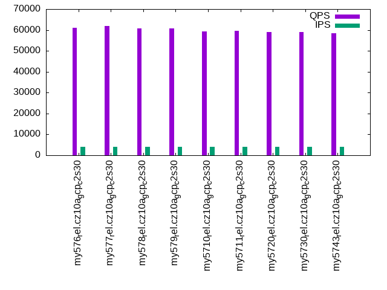

This is a report for the insert benchmark with 160M docs and 8 client(s). It is generated by scripts (bash, awk, sed) and Tufte might not be impressed. An overview of the insert benchmark is here and a short update is here. Below, by DBMS, I mean DBMS+version.config. An example is my8020.c10b40 where my means MySQL, 8020 is version 8.0.20 and c10b40 is the name for the configuration file.
The test server is a c2-standard-30 from GCP with 15 cores, hyperthreads disabled, Ubuntu 22.04 and XFS using SW RAID 0 over 4 local SSDs. The benchmark was run with 8 clients and there were 1, 2 or 3 connections per client. It uses 8 tables with a client per table. It loads 20M rows per table without secondary indexes, creates 3 secondary indexes per table, then inserts 50m+50m rows per table with a delete per insert to avoid growing the table. It then does 6 read+write tests for 1200s each that do queries as fast as possible with 100,100,500,500,1000,1000 inserts/s and the same for deletes/s per client concurrent with the queries. The database is cached in memory. Clients and the DBMS share one server. The per-database configs are in the per-database subdirectories here.
The tested DBMS are:
The numbers are inserts/s for l.i0, l.i1 and l.i2, indexed docs (or rows) /s for l.x and queries/s for qr100, qp100 thru qr1000, qp1000" The values are the average rate over the entire test for inserts (IPS) and queries (QPS). The range of values for IPS and QPS is split into 3 parts: bottom 25%, middle 50%, top 25%. Values in the bottom 25% have a red background, values in the top 25% have a green background and values in the middle have no color. A gray background is used for values that can be ignored because the DBMS did not sustain the target insert rate. Red backgrounds are not used when the minimum value is within 80% of the max value.
| dbms | l.i0 | l.x | l.i1 | l.i2 | qr100 | qp100 | qr500 | qp500 | qr1000 | qp1000 |
|---|---|---|---|---|---|---|---|---|---|---|
| my576_rel.cz10a_gcp_c2s30 | 720721 | 1167884 | 109981 | 48181 | 74064 | 62563 | 72721 | 61140 | 71059 | 59284 |
| my577_rel.cz10a_gcp_c2s30 | 720721 | 1118882 | 111018 | 49104 | 74724 | 63215 | 73396 | 61825 | 71726 | 60178 |
| my578_rel.cz10a_gcp_c2s30 | 701754 | 1167884 | 111266 | 48303 | 73948 | 62427 | 72521 | 60689 | 70688 | 59139 |
| my579_rel.cz10a_gcp_c2s30 | 751174 | 1185186 | 124572 | 51118 | 73011 | 62101 | 71995 | 60644 | 70434 | 58986 |
| my5710_rel.cz10a_gcp_c2s30 | 747664 | 1176471 | 122558 | 46163 | 72404 | 60829 | 70614 | 59290 | 69497 | 57782 |
| my5711_rel.cz10a_gcp_c2s30 | 733945 | 1185186 | 123839 | 50518 | 72653 | 61338 | 71180 | 59694 | 70007 | 58097 |
| my5720_rel.cz10a_gcp_c2s30 | 740741 | 1185186 | 121396 | 50955 | 71937 | 60637 | 70069 | 59058 | 69539 | 57666 |
| my5730_rel.cz10a_gcp_c2s30 | 747664 | 1176471 | 121812 | 51020 | 71759 | 60524 | 70009 | 59037 | 68804 | 57753 |
| my5743_rel.cz10a_gcp_c2s30 | 754717 | 1167884 | 121998 | 50955 | 70730 | 59834 | 68994 | 58356 | 67771 | 56966 |
This table has relative throughput, throughput for the DBMS relative to the DBMS in the first line, using the absolute throughput from the previous table. Values less than 0.95 have a yellow background. Values greater than 1.05 have a blue background.
| dbms | l.i0 | l.x | l.i1 | l.i2 | qr100 | qp100 | qr500 | qp500 | qr1000 | qp1000 |
|---|---|---|---|---|---|---|---|---|---|---|
| my576_rel.cz10a_gcp_c2s30 | 1.00 | 1.00 | 1.00 | 1.00 | 1.00 | 1.00 | 1.00 | 1.00 | 1.00 | 1.00 |
| my577_rel.cz10a_gcp_c2s30 | 1.00 | 0.96 | 1.01 | 1.02 | 1.01 | 1.01 | 1.01 | 1.01 | 1.01 | 1.02 |
| my578_rel.cz10a_gcp_c2s30 | 0.97 | 1.00 | 1.01 | 1.00 | 1.00 | 1.00 | 1.00 | 0.99 | 0.99 | 1.00 |
| my579_rel.cz10a_gcp_c2s30 | 1.04 | 1.01 | 1.13 | 1.06 | 0.99 | 0.99 | 0.99 | 0.99 | 0.99 | 0.99 |
| my5710_rel.cz10a_gcp_c2s30 | 1.04 | 1.01 | 1.11 | 0.96 | 0.98 | 0.97 | 0.97 | 0.97 | 0.98 | 0.97 |
| my5711_rel.cz10a_gcp_c2s30 | 1.02 | 1.01 | 1.13 | 1.05 | 0.98 | 0.98 | 0.98 | 0.98 | 0.99 | 0.98 |
| my5720_rel.cz10a_gcp_c2s30 | 1.03 | 1.01 | 1.10 | 1.06 | 0.97 | 0.97 | 0.96 | 0.97 | 0.98 | 0.97 |
| my5730_rel.cz10a_gcp_c2s30 | 1.04 | 1.01 | 1.11 | 1.06 | 0.97 | 0.97 | 0.96 | 0.97 | 0.97 | 0.97 |
| my5743_rel.cz10a_gcp_c2s30 | 1.05 | 1.00 | 1.11 | 1.06 | 0.95 | 0.96 | 0.95 | 0.95 | 0.95 | 0.96 |
This lists the average rate of inserts/s for the tests that do inserts concurrent with queries. For such tests the query rate is listed in the table above. The read+write tests are setup so that the insert rate should match the target rate every second. Cells that are not at least 95% of the target have a red background to indicate a failure to satisfy the target.
| dbms | qr100.L1 | qp100.L2 | qr500.L3 | qp500.L4 | qr1000.L5 | qp1000.L6 |
|---|---|---|---|---|---|---|
| my576_rel.cz10a_gcp_c2s30 | 793 | 794 | 3970 | 3970 | 7947 | 7940 |
| my577_rel.cz10a_gcp_c2s30 | 794 | 794 | 3967 | 3970 | 7947 | 7947 |
| my578_rel.cz10a_gcp_c2s30 | 793 | 794 | 3970 | 3970 | 7940 | 7940 |
| my579_rel.cz10a_gcp_c2s30 | 793 | 793 | 3970 | 3970 | 7947 | 7947 |
| my5710_rel.cz10a_gcp_c2s30 | 794 | 794 | 3967 | 3967 | 7947 | 7947 |
| my5711_rel.cz10a_gcp_c2s30 | 794 | 794 | 3970 | 3967 | 7940 | 7934 |
| my5720_rel.cz10a_gcp_c2s30 | 794 | 794 | 3967 | 3970 | 7947 | 7940 |
| my5730_rel.cz10a_gcp_c2s30 | 793 | 794 | 3970 | 3970 | 7940 | 7934 |
| my5743_rel.cz10a_gcp_c2s30 | 793 | 794 | 3970 | 3970 | 7940 | 7940 |
| target | 800 | 800 | 4000 | 4000 | 8000 | 8000 |
l.i0: load without secondary indexes. Graphs for performance per 1-second interval are here.
Average throughput:
Insert response time histogram: each cell has the percentage of responses that take <= the time in the header and max is the max response time in seconds. For the max column values in the top 25% of the range have a red background and in the bottom 25% of the range have a green background. The red background is not used when the min value is within 80% of the max value.
| dbms | 256us | 1ms | 4ms | 16ms | 64ms | 256ms | 1s | 4s | 16s | gt | max |
|---|---|---|---|---|---|---|---|---|---|---|---|
| my576_rel.cz10a_gcp_c2s30 | 71.665 | 28.266 | 0.033 | 0.022 | 0.014 | 0.255 | |||||
| my577_rel.cz10a_gcp_c2s30 | 73.749 | 26.178 | 0.036 | 0.022 | 0.015 | 0.241 | |||||
| my578_rel.cz10a_gcp_c2s30 | 53.596 | 46.328 | 0.036 | 0.026 | 0.014 | 0.245 | |||||
| my579_rel.cz10a_gcp_c2s30 | 91.501 | 8.420 | 0.045 | 0.019 | 0.015 | 0.230 | |||||
| my5710_rel.cz10a_gcp_c2s30 | 91.182 | 8.742 | 0.040 | 0.022 | 0.015 | 0.235 | |||||
| my5711_rel.cz10a_gcp_c2s30 | 87.648 | 12.274 | 0.040 | 0.024 | 0.015 | 0.226 | |||||
| my5720_rel.cz10a_gcp_c2s30 | 81.981 | 17.951 | 0.034 | 0.019 | 0.015 | 0.229 | |||||
| my5730_rel.cz10a_gcp_c2s30 | 86.734 | 13.197 | 0.032 | 0.021 | 0.015 | 0.245 | |||||
| my5743_rel.cz10a_gcp_c2s30 | 87.999 | 11.933 | 0.029 | 0.024 | 0.015 | 0.245 |
Performance metrics for the DBMS listed above. Some are normalized by throughput, others are not. Legend for results is here.
ips qps rps rmbps wps wmbps rpq rkbpq wpi wkbpi csps cpups cspq cpupq dbgb1 dbgb2 rss maxop p50 p99 tag 720721 0 0 0.0 1796.2 153.2 0.000 0.000 0.002 0.218 71814 70.4 0.100 15 10.6 75.1 17.3 0.255 97627 76816 my576_rel.cz10a_gcp_c2s30 720721 0 0 0.0 1805.1 153.8 0.000 0.000 0.003 0.218 71176 70.4 0.099 15 10.6 75.1 17.3 0.241 98593 76018 my577_rel.cz10a_gcp_c2s30 701754 0 0 0.0 1761.8 149.3 0.000 0.000 0.003 0.218 69798 70.2 0.099 15 10.6 75.1 17.1 0.245 95329 74120 my578_rel.cz10a_gcp_c2s30 751174 0 0 0.0 1836.3 155.8 0.000 0.000 0.002 0.212 70193 71.1 0.093 14 10.6 75.1 17.7 0.230 102325 79740 my579_rel.cz10a_gcp_c2s30 747664 0 0 0.0 1806.4 157.7 0.000 0.000 0.002 0.216 69969 71.1 0.094 14 10.6 75.1 17.7 0.235 101691 79839 my5710_rel.cz10a_gcp_c2s30 733945 0 0 0.0 1824.0 157.3 0.000 0.000 0.002 0.219 69045 70.8 0.094 14 10.6 75.1 17.6 0.226 101421 79615 my5711_rel.cz10a_gcp_c2s30 740741 0 0 0.0 1816.1 157.1 0.000 0.000 0.002 0.217 72043 70.6 0.097 14 10.6 75.1 17.6 0.229 100725 79314 my5720_rel.cz10a_gcp_c2s30 747664 0 0 0.0 1835.9 159.2 0.000 0.000 0.002 0.218 73235 70.8 0.098 14 10.6 75.1 17.7 0.245 102290 80312 my5730_rel.cz10a_gcp_c2s30 754717 0 0 0.0 1846.6 155.9 0.000 0.000 0.002 0.212 73311 70.7 0.097 14 10.6 75.1 17.8 0.245 102390 79115 my5743_rel.cz10a_gcp_c2s30
l.x: create secondary indexes.
Average throughput:
Performance metrics for the DBMS listed above. Some are normalized by throughput, others are not. Legend for results is here.
ips qps rps rmbps wps wmbps rpq rkbpq wpi wkbpi csps cpups cspq cpupq dbgb1 dbgb2 rss maxop p50 p99 tag 1167884 0 0 0.0 10116.9 1086.3 0.000 0.000 0.009 0.952 24362 31.7 0.021 4 24.3 88.8 25.9 0.026 NA NA my576_rel.cz10a_gcp_c2s30 1118882 0 0 0.0 9861.3 1050.7 0.000 0.000 0.009 0.962 24480 34.1 0.022 5 24.3 88.8 25.9 0.022 NA NA my577_rel.cz10a_gcp_c2s30 1167884 0 0 0.0 13238.3 1095.7 0.000 0.000 0.011 0.961 40295 36.0 0.035 5 24.3 88.8 26.4 0.029 NA NA my578_rel.cz10a_gcp_c2s30 1185186 0 0 0.0 13472.9 1105.5 0.000 0.000 0.011 0.955 45057 35.2 0.038 4 24.3 88.8 27.1 0.028 NA NA my579_rel.cz10a_gcp_c2s30 1176471 0 0 0.0 13685.1 1106.3 0.000 0.000 0.012 0.963 46671 35.6 0.040 5 24.3 88.8 26.6 0.028 NA NA my5710_rel.cz10a_gcp_c2s30 1185186 0 0 0.0 13398.7 1103.9 0.000 0.000 0.011 0.954 43939 35.5 0.037 4 24.3 88.8 27.0 0.028 NA NA my5711_rel.cz10a_gcp_c2s30 1185186 0 0 0.0 13551.9 1105.0 0.000 0.000 0.011 0.955 45242 35.6 0.038 5 24.3 88.8 26.9 0.026 NA NA my5720_rel.cz10a_gcp_c2s30 1176471 0 0 0.0 13345.6 1102.4 0.000 0.000 0.011 0.960 44192 36.0 0.038 5 24.3 88.8 26.4 0.031 NA NA my5730_rel.cz10a_gcp_c2s30 1167884 0 0 0.0 13162.5 1097.9 0.000 0.000 0.011 0.963 42116 36.3 0.036 5 24.3 88.8 26.2 0.030 NA NA my5743_rel.cz10a_gcp_c2s30
l.i1: continue load after secondary indexes created with 50 inserts per transaction. Graphs for performance per 1-second interval are here.
Average throughput:
Insert response time histogram: each cell has the percentage of responses that take <= the time in the header and max is the max response time in seconds. For the max column values in the top 25% of the range have a red background and in the bottom 25% of the range have a green background. The red background is not used when the min value is within 80% of the max value.
| dbms | 256us | 1ms | 4ms | 16ms | 64ms | 256ms | 1s | 4s | 16s | gt | max |
|---|---|---|---|---|---|---|---|---|---|---|---|
| my576_rel.cz10a_gcp_c2s30 | nonzero | 70.634 | 29.289 | 0.061 | 0.016 | nonzero | 0.355 | ||||
| my577_rel.cz10a_gcp_c2s30 | nonzero | 71.603 | 28.317 | 0.064 | 0.016 | 0.245 | |||||
| my578_rel.cz10a_gcp_c2s30 | nonzero | 71.761 | 28.160 | 0.063 | 0.016 | 0.252 | |||||
| my579_rel.cz10a_gcp_c2s30 | nonzero | 80.997 | 18.905 | 0.081 | 0.016 | nonzero | 0.333 | ||||
| my5710_rel.cz10a_gcp_c2s30 | nonzero | 79.984 | 19.912 | 0.087 | 0.016 | nonzero | 0.388 | ||||
| my5711_rel.cz10a_gcp_c2s30 | nonzero | 80.585 | 19.314 | 0.084 | 0.016 | nonzero | 0.299 | ||||
| my5720_rel.cz10a_gcp_c2s30 | nonzero | 78.818 | 21.094 | 0.072 | 0.016 | nonzero | 0.370 | ||||
| my5730_rel.cz10a_gcp_c2s30 | nonzero | 79.107 | 20.799 | 0.078 | 0.016 | nonzero | 0.279 | ||||
| my5743_rel.cz10a_gcp_c2s30 | 79.160 | 20.753 | 0.070 | 0.016 | nonzero | 0.554 |
Delete response time histogram: each cell has the percentage of responses that take <= the time in the header and max is the max response time in seconds. For the max column values in the top 25% of the range have a red background and in the bottom 25% of the range have a green background. The red background is not used when the min value is within 80% of the max value.
| dbms | 256us | 1ms | 4ms | 16ms | 64ms | 256ms | 1s | 4s | 16s | gt | max |
|---|---|---|---|---|---|---|---|---|---|---|---|
| my576_rel.cz10a_gcp_c2s30 | 0.001 | 76.800 | 23.142 | 0.043 | 0.014 | 0.244 | |||||
| my577_rel.cz10a_gcp_c2s30 | 0.001 | 77.480 | 22.461 | 0.043 | 0.015 | 0.233 | |||||
| my578_rel.cz10a_gcp_c2s30 | 0.001 | 77.346 | 22.594 | 0.044 | 0.015 | 0.253 | |||||
| my579_rel.cz10a_gcp_c2s30 | 0.002 | 81.578 | 18.335 | 0.070 | 0.015 | nonzero | 0.294 | ||||
| my5710_rel.cz10a_gcp_c2s30 | 0.001 | 80.725 | 19.186 | 0.073 | 0.015 | 0.224 | |||||
| my5711_rel.cz10a_gcp_c2s30 | 0.001 | 81.254 | 18.659 | 0.071 | 0.015 | nonzero | 0.315 | ||||
| my5720_rel.cz10a_gcp_c2s30 | 0.003 | 81.688 | 18.239 | 0.055 | 0.015 | nonzero | 0.292 | ||||
| my5730_rel.cz10a_gcp_c2s30 | 0.004 | 81.936 | 17.988 | 0.057 | 0.015 | nonzero | 0.271 | ||||
| my5743_rel.cz10a_gcp_c2s30 | 0.002 | 81.744 | 18.187 | 0.052 | 0.015 | nonzero | 0.548 |
Performance metrics for the DBMS listed above. Some are normalized by throughput, others are not. Legend for results is here.
ips qps rps rmbps wps wmbps rpq rkbpq wpi wkbpi csps cpups cspq cpupq dbgb1 dbgb2 rss maxop p50 p99 tag 109981 0 0 0.0 6314.4 233.2 0.000 0.000 0.057 2.171 75838 84.9 0.690 116 46.4 116.4 57.4 0.355 13735 10498 my576_rel.cz10a_gcp_c2s30 111018 0 0 0.0 6357.5 234.8 0.000 0.000 0.057 2.166 73371 85.3 0.661 115 46.6 116.7 57.7 0.245 13890 10696 my577_rel.cz10a_gcp_c2s30 111266 0 0 0.0 6401.1 236.2 0.000 0.000 0.058 2.174 77215 85.1 0.694 115 46.7 116.9 57.9 0.252 13935 10542 my578_rel.cz10a_gcp_c2s30 124572 0 0 0.0 6913.0 257.6 0.000 0.000 0.055 2.118 57873 88.4 0.465 106 48.6 119.9 60.6 0.333 15683 12137 my579_rel.cz10a_gcp_c2s30 122558 0 0 0.0 6788.4 254.3 0.000 0.000 0.055 2.124 57971 88.3 0.473 108 47.0 117.2 58.1 0.388 15438 11737 my5710_rel.cz10a_gcp_c2s30 123839 0 0 0.0 6884.2 256.2 0.000 0.000 0.056 2.119 58429 88.2 0.472 107 48.8 120.2 61.0 0.299 15588 11937 my5711_rel.cz10a_gcp_c2s30 121396 0 0 0.0 6774.6 251.8 0.000 0.000 0.056 2.124 51496 88.1 0.424 109 41.9 109.0 50.4 0.370 15284 11737 my5720_rel.cz10a_gcp_c2s30 121812 0 0 0.0 6798.9 252.5 0.000 0.000 0.056 2.122 51643 88.1 0.424 108 42.1 109.2 50.5 0.279 15388 11687 my5730_rel.cz10a_gcp_c2s30 121998 0 0 0.0 6793.8 252.8 0.000 0.000 0.056 2.122 51918 88.3 0.426 109 42.2 109.4 50.8 0.554 15339 11542 my5743_rel.cz10a_gcp_c2s30
l.i2: continue load after secondary indexes created with 5 inserts per transaction. Graphs for performance per 1-second interval are here.
Average throughput:
Insert response time histogram: each cell has the percentage of responses that take <= the time in the header and max is the max response time in seconds. For the max column values in the top 25% of the range have a red background and in the bottom 25% of the range have a green background. The red background is not used when the min value is within 80% of the max value.
| dbms | 256us | 1ms | 4ms | 16ms | 64ms | 256ms | 1s | 4s | 16s | gt | max |
|---|---|---|---|---|---|---|---|---|---|---|---|
| my576_rel.cz10a_gcp_c2s30 | 0.287 | 76.793 | 22.790 | 0.123 | 0.004 | 0.003 | 0.245 | ||||
| my577_rel.cz10a_gcp_c2s30 | 0.316 | 77.918 | 21.645 | 0.114 | 0.004 | 0.003 | 0.246 | ||||
| my578_rel.cz10a_gcp_c2s30 | 0.245 | 76.943 | 22.685 | 0.120 | 0.004 | 0.003 | 0.255 | ||||
| my579_rel.cz10a_gcp_c2s30 | 0.563 | 80.391 | 18.921 | 0.117 | 0.004 | 0.003 | 0.252 | ||||
| my5710_rel.cz10a_gcp_c2s30 | 0.329 | 74.358 | 25.057 | 0.249 | 0.005 | 0.002 | 0.225 | ||||
| my5711_rel.cz10a_gcp_c2s30 | 0.456 | 79.677 | 19.743 | 0.118 | 0.004 | 0.003 | nonzero | 0.257 | |||
| my5720_rel.cz10a_gcp_c2s30 | 0.500 | 82.286 | 17.082 | 0.125 | 0.005 | 0.003 | 0.247 | ||||
| my5730_rel.cz10a_gcp_c2s30 | 0.451 | 82.401 | 17.023 | 0.117 | 0.005 | 0.003 | 0.243 | ||||
| my5743_rel.cz10a_gcp_c2s30 | 0.467 | 81.568 | 17.831 | 0.127 | 0.005 | 0.003 | 0.248 |
Delete response time histogram: each cell has the percentage of responses that take <= the time in the header and max is the max response time in seconds. For the max column values in the top 25% of the range have a red background and in the bottom 25% of the range have a green background. The red background is not used when the min value is within 80% of the max value.
| dbms | 256us | 1ms | 4ms | 16ms | 64ms | 256ms | 1s | 4s | 16s | gt | max |
|---|---|---|---|---|---|---|---|---|---|---|---|
| my576_rel.cz10a_gcp_c2s30 | 0.364 | 77.438 | 22.077 | 0.116 | 0.003 | 0.003 | 0.247 | ||||
| my577_rel.cz10a_gcp_c2s30 | 0.482 | 78.577 | 20.828 | 0.106 | 0.003 | 0.003 | 0.246 | ||||
| my578_rel.cz10a_gcp_c2s30 | 0.310 | 77.616 | 21.955 | 0.114 | 0.003 | 0.003 | 0.255 | ||||
| my579_rel.cz10a_gcp_c2s30 | 0.821 | 80.788 | 18.274 | 0.110 | 0.003 | 0.003 | 0.253 | ||||
| my5710_rel.cz10a_gcp_c2s30 | 0.491 | 75.458 | 23.811 | 0.234 | 0.004 | 0.002 | nonzero | 0.281 | |||
| my5711_rel.cz10a_gcp_c2s30 | 0.627 | 80.217 | 19.038 | 0.112 | 0.004 | 0.003 | nonzero | 0.257 | |||
| my5720_rel.cz10a_gcp_c2s30 | 0.684 | 83.033 | 16.157 | 0.119 | 0.004 | 0.003 | 0.247 | ||||
| my5730_rel.cz10a_gcp_c2s30 | 0.748 | 83.158 | 15.977 | 0.111 | 0.004 | 0.003 | 0.243 | ||||
| my5743_rel.cz10a_gcp_c2s30 | 0.643 | 82.396 | 16.835 | 0.119 | 0.004 | 0.003 | 0.247 |
Performance metrics for the DBMS listed above. Some are normalized by throughput, others are not. Legend for results is here.
ips qps rps rmbps wps wmbps rpq rkbpq wpi wkbpi csps cpups cspq cpupq dbgb1 dbgb2 rss maxop p50 p99 tag 48181 0 0 0.0 4425.7 161.8 0.000 0.000 0.092 3.439 179823 79.1 3.732 246 46.4 116.4 58.8 0.245 6173 4717 my576_rel.cz10a_gcp_c2s30 49104 0 0 0.0 4456.2 163.0 0.000 0.000 0.091 3.399 181366 79.2 3.694 242 46.6 116.7 59.1 0.246 6303 4835 my577_rel.cz10a_gcp_c2s30 48303 0 0 0.0 4466.6 163.0 0.000 0.000 0.092 3.455 181026 79.1 3.748 246 46.7 116.9 59.3 0.255 6188 4741 my578_rel.cz10a_gcp_c2s30 51118 0 0 0.0 4671.5 170.9 0.000 0.000 0.091 3.424 184357 79.6 3.606 234 48.6 119.9 62.2 0.252 6583 4955 my579_rel.cz10a_gcp_c2s30 46163 0 0 0.0 5231.7 186.2 0.000 0.000 0.113 4.130 166489 80.3 3.607 261 47.0 117.2 58.2 0.225 5571 4805 my5710_rel.cz10a_gcp_c2s30 50518 0 0 0.0 4623.6 169.2 0.000 0.000 0.092 3.429 181988 79.5 3.602 236 48.8 120.2 62.6 0.257 6503 4936 my5711_rel.cz10a_gcp_c2s30 50955 0 0 0.0 5073.4 184.1 0.000 0.000 0.100 3.699 191749 79.4 3.763 234 41.9 109.0 50.8 0.247 6753 4906 my5720_rel.cz10a_gcp_c2s30 51020 0 0 0.0 5086.1 184.7 0.000 0.000 0.100 3.708 191730 79.5 3.758 234 42.1 109.2 51.0 0.243 6788 4941 my5730_rel.cz10a_gcp_c2s30 50955 0 0 0.0 5123.7 185.8 0.000 0.000 0.101 3.734 189064 78.9 3.710 232 42.2 109.4 51.2 0.248 6818 4866 my5743_rel.cz10a_gcp_c2s30
qr100.L1: range queries with 100 insert/s per client. Graphs for performance per 1-second interval are here.
Average throughput:
Query response time histogram: each cell has the percentage of responses that take <= the time in the header and max is the max response time in seconds. For max values in the top 25% of the range have a red background and in the bottom 25% of the range have a green background. The red background is not used when the min value is within 80% of the max value.
| dbms | 256us | 1ms | 4ms | 16ms | 64ms | 256ms | 1s | 4s | 16s | gt | max |
|---|---|---|---|---|---|---|---|---|---|---|---|
| my576_rel.cz10a_gcp_c2s30 | 99.968 | 0.030 | 0.002 | nonzero | 0.008 | ||||||
| my577_rel.cz10a_gcp_c2s30 | 99.965 | 0.034 | 0.002 | nonzero | nonzero | 0.018 | |||||
| my578_rel.cz10a_gcp_c2s30 | 99.966 | 0.033 | 0.002 | nonzero | 0.012 | ||||||
| my579_rel.cz10a_gcp_c2s30 | 99.966 | 0.033 | 0.002 | nonzero | 0.009 | ||||||
| my5710_rel.cz10a_gcp_c2s30 | 99.965 | 0.034 | 0.002 | nonzero | 0.008 | ||||||
| my5711_rel.cz10a_gcp_c2s30 | 99.964 | 0.035 | 0.002 | nonzero | 0.009 | ||||||
| my5720_rel.cz10a_gcp_c2s30 | 99.968 | 0.031 | 0.002 | nonzero | 0.012 | ||||||
| my5730_rel.cz10a_gcp_c2s30 | 99.968 | 0.031 | 0.002 | nonzero | 0.012 | ||||||
| my5743_rel.cz10a_gcp_c2s30 | 99.981 | 0.018 | 0.001 | nonzero | 0.006 |
Insert response time histogram: each cell has the percentage of responses that take <= the time in the header and max is the max response time in seconds. For max values in the top 25% of the range have a red background and in the bottom 25% of the range have a green background. The red background is not used when the min value is within 80% of the max value.
| dbms | 256us | 1ms | 4ms | 16ms | 64ms | 256ms | 1s | 4s | 16s | gt | max |
|---|---|---|---|---|---|---|---|---|---|---|---|
| my576_rel.cz10a_gcp_c2s30 | 98.432 | 1.568 | 0.011 | ||||||||
| my577_rel.cz10a_gcp_c2s30 | 98.542 | 1.458 | 0.014 | ||||||||
| my578_rel.cz10a_gcp_c2s30 | 98.464 | 1.536 | 0.015 | ||||||||
| my579_rel.cz10a_gcp_c2s30 | 99.495 | 0.505 | 0.008 | ||||||||
| my5710_rel.cz10a_gcp_c2s30 | 99.521 | 0.479 | 0.010 | ||||||||
| my5711_rel.cz10a_gcp_c2s30 | 99.432 | 0.568 | 0.009 | ||||||||
| my5720_rel.cz10a_gcp_c2s30 | 99.625 | 0.375 | 0.010 | ||||||||
| my5730_rel.cz10a_gcp_c2s30 | 99.635 | 0.365 | 0.007 | ||||||||
| my5743_rel.cz10a_gcp_c2s30 | 99.969 | 0.031 | 0.006 |
Delete response time histogram: each cell has the percentage of responses that take <= the time in the header and max is the max response time in seconds. For max values in the top 25% of the range have a red background and in the bottom 25% of the range have a green background. The red background is not used when the min value is within 80% of the max value.
| dbms | 256us | 1ms | 4ms | 16ms | 64ms | 256ms | 1s | 4s | 16s | gt | max |
|---|---|---|---|---|---|---|---|---|---|---|---|
| my576_rel.cz10a_gcp_c2s30 | 0.010 | 99.427 | 0.562 | 0.008 | |||||||
| my577_rel.cz10a_gcp_c2s30 | 99.318 | 0.672 | 0.010 | 0.027 | |||||||
| my578_rel.cz10a_gcp_c2s30 | 99.391 | 0.609 | 0.015 | ||||||||
| my579_rel.cz10a_gcp_c2s30 | 99.849 | 0.151 | 0.006 | ||||||||
| my5710_rel.cz10a_gcp_c2s30 | 99.849 | 0.151 | 0.009 | ||||||||
| my5711_rel.cz10a_gcp_c2s30 | 99.807 | 0.193 | 0.013 | ||||||||
| my5720_rel.cz10a_gcp_c2s30 | 99.792 | 0.208 | 0.006 | ||||||||
| my5730_rel.cz10a_gcp_c2s30 | 0.010 | 99.818 | 0.172 | 0.006 | |||||||
| my5743_rel.cz10a_gcp_c2s30 | 0.005 | 99.979 | 0.016 | 0.005 |
Performance metrics for the DBMS listed above. Some are normalized by throughput, others are not. Legend for results is here.
ips qps rps rmbps wps wmbps rpq rkbpq wpi wkbpi csps cpups cspq cpupq dbgb1 dbgb2 rss maxop p50 p99 tag 793 74064 0 0.0 514.7 15.8 0.000 0.000 0.649 20.370 284405 54.6 3.840 111 46.4 116.4 58.8 0.008 9366 9190 my576_rel.cz10a_gcp_c2s30 794 74724 0 0.0 526.1 16.1 0.000 0.000 0.663 20.791 286701 55.0 3.837 110 46.6 116.7 59.1 0.018 9382 9238 my577_rel.cz10a_gcp_c2s30 793 73948 0 0.0 513.7 15.7 0.000 0.000 0.648 20.307 284173 54.9 3.843 111 46.7 116.9 59.3 0.012 9289 9145 my578_rel.cz10a_gcp_c2s30 793 73011 0 0.0 523.4 16.0 0.000 0.000 0.660 20.691 280654 54.8 3.844 113 48.6 119.9 62.2 0.009 9177 9001 my579_rel.cz10a_gcp_c2s30 794 72404 0 0.0 81.2 2.8 0.000 0.000 0.102 3.578 277046 54.7 3.826 113 47.0 117.2 58.2 0.008 9110 8998 my5710_rel.cz10a_gcp_c2s30 794 72653 0 0.0 525.0 16.1 0.000 0.000 0.661 20.733 279054 54.8 3.841 113 48.8 120.2 62.6 0.009 9129 8934 my5711_rel.cz10a_gcp_c2s30 794 71937 0 0.0 80.4 2.8 0.000 0.000 0.101 3.565 275208 54.7 3.826 114 41.9 109.0 50.8 0.012 9114 9014 my5720_rel.cz10a_gcp_c2s30 793 71759 0 0.0 93.7 3.2 0.000 0.000 0.118 4.087 274768 54.6 3.829 114 42.1 109.2 51.0 0.012 9094 8985 my5730_rel.cz10a_gcp_c2s30 793 70730 0 0.0 84.6 2.9 0.000 0.000 0.107 3.731 270834 54.4 3.829 115 42.2 109.4 51.2 0.006 8870 8774 my5743_rel.cz10a_gcp_c2s30
qp100.L2: point queries with 100 insert/s per client. Graphs for performance per 1-second interval are here.
Average throughput:
Query response time histogram: each cell has the percentage of responses that take <= the time in the header and max is the max response time in seconds. For max values in the top 25% of the range have a red background and in the bottom 25% of the range have a green background. The red background is not used when the min value is within 80% of the max value.
| dbms | 256us | 1ms | 4ms | 16ms | 64ms | 256ms | 1s | 4s | 16s | gt | max |
|---|---|---|---|---|---|---|---|---|---|---|---|
| my576_rel.cz10a_gcp_c2s30 | 99.942 | 0.055 | 0.003 | nonzero | 0.009 | ||||||
| my577_rel.cz10a_gcp_c2s30 | 99.935 | 0.062 | 0.003 | nonzero | 0.015 | ||||||
| my578_rel.cz10a_gcp_c2s30 | 99.901 | 0.093 | 0.006 | nonzero | 0.011 | ||||||
| my579_rel.cz10a_gcp_c2s30 | 99.907 | 0.087 | 0.006 | nonzero | 0.014 | ||||||
| my5710_rel.cz10a_gcp_c2s30 | 99.909 | 0.086 | 0.005 | nonzero | 0.012 | ||||||
| my5711_rel.cz10a_gcp_c2s30 | 99.900 | 0.094 | 0.006 | nonzero | 0.014 | ||||||
| my5720_rel.cz10a_gcp_c2s30 | 99.903 | 0.092 | 0.006 | nonzero | 0.013 | ||||||
| my5730_rel.cz10a_gcp_c2s30 | 99.900 | 0.094 | 0.006 | nonzero | 0.014 | ||||||
| my5743_rel.cz10a_gcp_c2s30 | 99.934 | 0.062 | 0.004 | nonzero | 0.007 |
Insert response time histogram: each cell has the percentage of responses that take <= the time in the header and max is the max response time in seconds. For max values in the top 25% of the range have a red background and in the bottom 25% of the range have a green background. The red background is not used when the min value is within 80% of the max value.
| dbms | 256us | 1ms | 4ms | 16ms | 64ms | 256ms | 1s | 4s | 16s | gt | max |
|---|---|---|---|---|---|---|---|---|---|---|---|
| my576_rel.cz10a_gcp_c2s30 | 98.438 | 1.562 | 0.010 | ||||||||
| my577_rel.cz10a_gcp_c2s30 | 98.859 | 1.141 | 0.010 | ||||||||
| my578_rel.cz10a_gcp_c2s30 | 98.047 | 1.953 | 0.014 | ||||||||
| my579_rel.cz10a_gcp_c2s30 | 99.646 | 0.354 | 0.011 | ||||||||
| my5710_rel.cz10a_gcp_c2s30 | 99.714 | 0.286 | 0.007 | ||||||||
| my5711_rel.cz10a_gcp_c2s30 | 99.625 | 0.375 | 0.010 | ||||||||
| my5720_rel.cz10a_gcp_c2s30 | 99.792 | 0.208 | 0.006 | ||||||||
| my5730_rel.cz10a_gcp_c2s30 | 99.823 | 0.177 | 0.008 | ||||||||
| my5743_rel.cz10a_gcp_c2s30 | 100.000 | 0.003 |
Delete response time histogram: each cell has the percentage of responses that take <= the time in the header and max is the max response time in seconds. For max values in the top 25% of the range have a red background and in the bottom 25% of the range have a green background. The red background is not used when the min value is within 80% of the max value.
| dbms | 256us | 1ms | 4ms | 16ms | 64ms | 256ms | 1s | 4s | 16s | gt | max |
|---|---|---|---|---|---|---|---|---|---|---|---|
| my576_rel.cz10a_gcp_c2s30 | 99.312 | 0.688 | 0.009 | ||||||||
| my577_rel.cz10a_gcp_c2s30 | 99.453 | 0.547 | 0.010 | ||||||||
| my578_rel.cz10a_gcp_c2s30 | 99.214 | 0.786 | 0.009 | ||||||||
| my579_rel.cz10a_gcp_c2s30 | 99.839 | 0.161 | 0.008 | ||||||||
| my5710_rel.cz10a_gcp_c2s30 | 99.906 | 0.094 | 0.006 | ||||||||
| my5711_rel.cz10a_gcp_c2s30 | 99.885 | 0.115 | 0.010 | ||||||||
| my5720_rel.cz10a_gcp_c2s30 | 99.932 | 0.068 | 0.006 | ||||||||
| my5730_rel.cz10a_gcp_c2s30 | 0.005 | 99.922 | 0.073 | 0.005 | |||||||
| my5743_rel.cz10a_gcp_c2s30 | 100.000 | 0.003 |
Performance metrics for the DBMS listed above. Some are normalized by throughput, others are not. Legend for results is here.
ips qps rps rmbps wps wmbps rpq rkbpq wpi wkbpi csps cpups cspq cpupq dbgb1 dbgb2 rss maxop p50 p99 tag 794 62563 0 0.0 60.5 2.0 0.000 0.000 0.076 2.640 249374 53.9 3.986 129 46.4 116.4 58.8 0.009 7882 7799 my576_rel.cz10a_gcp_c2s30 794 63215 0 0.0 69.8 2.3 0.000 0.000 0.088 2.970 252052 54.2 3.987 129 46.6 116.7 59.1 0.015 7943 7863 my577_rel.cz10a_gcp_c2s30 794 62427 0 0.0 70.8 2.3 0.000 0.000 0.089 3.011 249062 54.0 3.990 130 46.7 116.9 59.3 0.011 7866 7799 my578_rel.cz10a_gcp_c2s30 793 62101 0 0.0 58.0 2.0 0.000 0.000 0.073 2.538 247911 54.0 3.992 130 48.6 119.9 62.2 0.014 7768 7688 my579_rel.cz10a_gcp_c2s30 794 60829 0 0.0 3.5 0.5 0.000 0.000 0.004 0.642 242427 54.3 3.985 134 47.0 117.2 58.2 0.012 7627 7560 my5710_rel.cz10a_gcp_c2s30 794 61338 0 0.0 57.7 2.0 0.000 0.000 0.073 2.523 244709 54.3 3.989 133 48.8 120.2 62.6 0.014 7688 7608 my5711_rel.cz10a_gcp_c2s30 794 60637 0 0.0 3.3 0.5 0.000 0.000 0.004 0.642 241660 54.2 3.985 134 41.9 109.0 50.8 0.013 7624 7544 my5720_rel.cz10a_gcp_c2s30 794 60524 0 0.0 3.3 0.5 0.000 0.000 0.004 0.628 241168 54.3 3.985 135 42.1 109.2 51.0 0.014 7592 7515 my5730_rel.cz10a_gcp_c2s30 794 59834 0 0.0 3.3 0.5 0.000 0.000 0.004 0.642 238316 54.3 3.983 136 42.2 109.4 51.2 0.007 7512 7432 my5743_rel.cz10a_gcp_c2s30
qr500.L3: range queries with 500 insert/s per client. Graphs for performance per 1-second interval are here.
Average throughput:
Query response time histogram: each cell has the percentage of responses that take <= the time in the header and max is the max response time in seconds. For max values in the top 25% of the range have a red background and in the bottom 25% of the range have a green background. The red background is not used when the min value is within 80% of the max value.
| dbms | 256us | 1ms | 4ms | 16ms | 64ms | 256ms | 1s | 4s | 16s | gt | max |
|---|---|---|---|---|---|---|---|---|---|---|---|
| my576_rel.cz10a_gcp_c2s30 | 99.873 | 0.100 | 0.027 | 0.001 | 0.011 | ||||||
| my577_rel.cz10a_gcp_c2s30 | 99.877 | 0.096 | 0.026 | 0.001 | 0.011 | ||||||
| my578_rel.cz10a_gcp_c2s30 | 99.879 | 0.094 | 0.027 | 0.001 | 0.013 | ||||||
| my579_rel.cz10a_gcp_c2s30 | 99.929 | 0.056 | 0.014 | 0.001 | nonzero | 0.022 | |||||
| my5710_rel.cz10a_gcp_c2s30 | 99.918 | 0.067 | 0.014 | 0.001 | nonzero | 0.022 | |||||
| my5711_rel.cz10a_gcp_c2s30 | 99.913 | 0.071 | 0.015 | 0.001 | nonzero | 0.016 | |||||
| my5720_rel.cz10a_gcp_c2s30 | 99.922 | 0.064 | 0.013 | 0.001 | nonzero | 0.018 | |||||
| my5730_rel.cz10a_gcp_c2s30 | 99.923 | 0.063 | 0.013 | 0.001 | nonzero | 0.019 | |||||
| my5743_rel.cz10a_gcp_c2s30 | 99.948 | 0.044 | 0.007 | nonzero | nonzero | 0.018 |
Insert response time histogram: each cell has the percentage of responses that take <= the time in the header and max is the max response time in seconds. For max values in the top 25% of the range have a red background and in the bottom 25% of the range have a green background. The red background is not used when the min value is within 80% of the max value.
| dbms | 256us | 1ms | 4ms | 16ms | 64ms | 256ms | 1s | 4s | 16s | gt | max |
|---|---|---|---|---|---|---|---|---|---|---|---|
| my576_rel.cz10a_gcp_c2s30 | 71.464 | 28.396 | 0.141 | 0.031 | |||||||
| my577_rel.cz10a_gcp_c2s30 | 72.279 | 27.603 | 0.118 | 0.027 | |||||||
| my578_rel.cz10a_gcp_c2s30 | 70.684 | 29.165 | 0.151 | 0.025 | |||||||
| my579_rel.cz10a_gcp_c2s30 | 89.635 | 10.260 | 0.104 | 0.031 | |||||||
| my5710_rel.cz10a_gcp_c2s30 | 90.558 | 9.330 | 0.111 | 0.028 | |||||||
| my5711_rel.cz10a_gcp_c2s30 | 89.212 | 10.641 | 0.147 | 0.028 | |||||||
| my5720_rel.cz10a_gcp_c2s30 | 91.981 | 7.901 | 0.118 | 0.032 | |||||||
| my5730_rel.cz10a_gcp_c2s30 | 91.840 | 8.029 | 0.131 | 0.039 | |||||||
| my5743_rel.cz10a_gcp_c2s30 | 96.165 | 3.775 | 0.060 | 0.029 |
Delete response time histogram: each cell has the percentage of responses that take <= the time in the header and max is the max response time in seconds. For max values in the top 25% of the range have a red background and in the bottom 25% of the range have a green background. The red background is not used when the min value is within 80% of the max value.
| dbms | 256us | 1ms | 4ms | 16ms | 64ms | 256ms | 1s | 4s | 16s | gt | max |
|---|---|---|---|---|---|---|---|---|---|---|---|
| my576_rel.cz10a_gcp_c2s30 | 0.015 | 79.841 | 20.087 | 0.057 | 0.024 | ||||||
| my577_rel.cz10a_gcp_c2s30 | 0.014 | 80.772 | 19.157 | 0.057 | 0.023 | ||||||
| my578_rel.cz10a_gcp_c2s30 | 0.004 | 79.284 | 20.624 | 0.088 | 0.023 | ||||||
| my579_rel.cz10a_gcp_c2s30 | 0.025 | 93.276 | 6.629 | 0.070 | 0.023 | ||||||
| my5710_rel.cz10a_gcp_c2s30 | 0.053 | 93.710 | 6.169 | 0.068 | 0.035 | ||||||
| my5711_rel.cz10a_gcp_c2s30 | 0.019 | 92.837 | 7.061 | 0.082 | 0.027 | ||||||
| my5720_rel.cz10a_gcp_c2s30 | 0.049 | 94.490 | 5.393 | 0.069 | 0.031 | ||||||
| my5730_rel.cz10a_gcp_c2s30 | 0.042 | 94.340 | 5.530 | 0.089 | 0.029 | ||||||
| my5743_rel.cz10a_gcp_c2s30 | 0.079 | 97.242 | 2.634 | 0.045 | 0.025 |
Performance metrics for the DBMS listed above. Some are normalized by throughput, others are not. Legend for results is here.
ips qps rps rmbps wps wmbps rpq rkbpq wpi wkbpi csps cpups cspq cpupq dbgb1 dbgb2 rss maxop p50 p99 tag 3970 72721 0 0.0 413.0 14.2 0.000 0.000 0.104 3.651 276260 56.5 3.799 117 46.4 116.4 58.8 0.011 9145 9030 my576_rel.cz10a_gcp_c2s30 3967 73396 0 0.0 494.7 16.7 0.000 0.000 0.125 4.310 279116 56.9 3.803 116 46.6 116.7 59.1 0.011 9206 9066 my577_rel.cz10a_gcp_c2s30 3970 72521 0 0.0 388.6 13.5 0.000 0.000 0.098 3.469 275483 56.8 3.799 117 46.7 116.9 59.3 0.013 9146 9030 my578_rel.cz10a_gcp_c2s30 3970 71995 0 0.0 475.1 16.1 0.000 0.000 0.120 4.160 272978 56.8 3.792 118 48.6 119.9 62.2 0.022 9062 8902 my579_rel.cz10a_gcp_c2s30 3967 70614 0 0.0 558.8 18.6 0.000 0.000 0.141 4.790 268402 56.7 3.801 120 47.0 117.2 58.2 0.022 8886 8694 my5710_rel.cz10a_gcp_c2s30 3970 71180 0 0.0 376.7 13.1 0.000 0.000 0.095 3.375 269787 56.7 3.790 119 48.8 120.2 62.6 0.016 8937 8806 my5711_rel.cz10a_gcp_c2s30 3967 70069 0 0.0 613.0 20.3 0.000 0.000 0.155 5.233 266627 56.8 3.805 122 41.9 109.0 50.9 0.018 8826 8615 my5720_rel.cz10a_gcp_c2s30 3970 70009 0 0.0 624.6 20.5 0.000 0.000 0.157 5.296 266073 56.6 3.801 121 42.1 109.2 51.0 0.019 8902 8678 my5730_rel.cz10a_gcp_c2s30 3970 68994 0 0.0 526.7 17.6 0.000 0.000 0.133 4.536 263156 56.5 3.814 123 42.2 109.4 51.3 0.018 8694 8519 my5743_rel.cz10a_gcp_c2s30
qp500.L4: point queries with 500 insert/s per client. Graphs for performance per 1-second interval are here.
Average throughput:
Query response time histogram: each cell has the percentage of responses that take <= the time in the header and max is the max response time in seconds. For max values in the top 25% of the range have a red background and in the bottom 25% of the range have a green background. The red background is not used when the min value is within 80% of the max value.
| dbms | 256us | 1ms | 4ms | 16ms | 64ms | 256ms | 1s | 4s | 16s | gt | max |
|---|---|---|---|---|---|---|---|---|---|---|---|
| my576_rel.cz10a_gcp_c2s30 | 99.792 | 0.174 | 0.033 | 0.001 | 0.011 | ||||||
| my577_rel.cz10a_gcp_c2s30 | 99.791 | 0.174 | 0.034 | 0.001 | 0.014 | ||||||
| my578_rel.cz10a_gcp_c2s30 | 99.615 | 0.340 | 0.044 | 0.001 | nonzero | 0.017 | |||||
| my579_rel.cz10a_gcp_c2s30 | 99.669 | 0.295 | 0.034 | 0.002 | nonzero | 0.022 | |||||
| my5710_rel.cz10a_gcp_c2s30 | 99.680 | 0.286 | 0.032 | 0.002 | nonzero | 0.019 | |||||
| my5711_rel.cz10a_gcp_c2s30 | 99.699 | 0.269 | 0.031 | 0.002 | nonzero | 0.020 | |||||
| my5720_rel.cz10a_gcp_c2s30 | 99.682 | 0.286 | 0.029 | 0.002 | 0.015 | ||||||
| my5730_rel.cz10a_gcp_c2s30 | 99.662 | 0.304 | 0.032 | 0.002 | nonzero | 0.019 | |||||
| my5743_rel.cz10a_gcp_c2s30 | 99.753 | 0.227 | 0.019 | 0.001 | nonzero | 0.020 |
Insert response time histogram: each cell has the percentage of responses that take <= the time in the header and max is the max response time in seconds. For max values in the top 25% of the range have a red background and in the bottom 25% of the range have a green background. The red background is not used when the min value is within 80% of the max value.
| dbms | 256us | 1ms | 4ms | 16ms | 64ms | 256ms | 1s | 4s | 16s | gt | max |
|---|---|---|---|---|---|---|---|---|---|---|---|
| my576_rel.cz10a_gcp_c2s30 | 72.670 | 27.200 | 0.130 | 0.025 | |||||||
| my577_rel.cz10a_gcp_c2s30 | 71.707 | 28.149 | 0.144 | 0.033 | |||||||
| my578_rel.cz10a_gcp_c2s30 | 76.469 | 23.436 | 0.095 | 0.024 | |||||||
| my579_rel.cz10a_gcp_c2s30 | 91.934 | 7.996 | 0.070 | 0.032 | |||||||
| my5710_rel.cz10a_gcp_c2s30 | 91.191 | 8.717 | 0.093 | 0.037 | |||||||
| my5711_rel.cz10a_gcp_c2s30 | 89.775 | 10.083 | 0.142 | 0.032 | |||||||
| my5720_rel.cz10a_gcp_c2s30 | 93.859 | 6.073 | 0.068 | 0.032 | |||||||
| my5730_rel.cz10a_gcp_c2s30 | 92.986 | 6.930 | 0.083 | 0.029 | |||||||
| my5743_rel.cz10a_gcp_c2s30 | 96.072 | 3.878 | 0.050 | 0.024 |
Delete response time histogram: each cell has the percentage of responses that take <= the time in the header and max is the max response time in seconds. For max values in the top 25% of the range have a red background and in the bottom 25% of the range have a green background. The red background is not used when the min value is within 80% of the max value.
| dbms | 256us | 1ms | 4ms | 16ms | 64ms | 256ms | 1s | 4s | 16s | gt | max |
|---|---|---|---|---|---|---|---|---|---|---|---|
| my576_rel.cz10a_gcp_c2s30 | 0.011 | 80.959 | 18.956 | 0.073 | 0.031 | ||||||
| my577_rel.cz10a_gcp_c2s30 | 0.015 | 80.632 | 19.277 | 0.076 | 0.034 | ||||||
| my578_rel.cz10a_gcp_c2s30 | 0.009 | 83.491 | 16.434 | 0.066 | 0.024 | ||||||
| my579_rel.cz10a_gcp_c2s30 | 0.022 | 94.847 | 5.085 | 0.046 | 0.023 | ||||||
| my5710_rel.cz10a_gcp_c2s30 | 0.013 | 94.453 | 5.473 | 0.061 | 0.025 | ||||||
| my5711_rel.cz10a_gcp_c2s30 | 0.009 | 93.481 | 6.430 | 0.079 | 0.060 | ||||||
| my5720_rel.cz10a_gcp_c2s30 | 0.037 | 96.139 | 3.783 | 0.041 | 0.024 | ||||||
| my5730_rel.cz10a_gcp_c2s30 | 0.036 | 95.272 | 4.648 | 0.044 | 0.028 | ||||||
| my5743_rel.cz10a_gcp_c2s30 | 0.014 | 97.090 | 2.871 | 0.026 | 0.025 |
Performance metrics for the DBMS listed above. Some are normalized by throughput, others are not. Legend for results is here.
ips qps rps rmbps wps wmbps rpq rkbpq wpi wkbpi csps cpups cspq cpupq dbgb1 dbgb2 rss maxop p50 p99 tag 3970 61140 0 0.0 602.4 20.0 0.000 0.000 0.152 5.152 242844 56.3 3.972 138 46.4 116.4 58.8 0.011 7720 7610 my576_rel.cz10a_gcp_c2s30 3970 61825 0 0.0 493.3 16.6 0.000 0.000 0.124 4.290 245397 56.4 3.969 137 46.6 116.7 59.1 0.014 7802 7672 my577_rel.cz10a_gcp_c2s30 3970 60689 0 0.0 628.0 20.8 0.000 0.000 0.158 5.361 242386 56.2 3.994 139 46.7 116.9 59.3 0.017 7656 7496 my578_rel.cz10a_gcp_c2s30 3970 60644 0 0.0 527.2 17.7 0.000 0.000 0.133 4.560 241499 56.0 3.982 139 48.6 119.9 62.2 0.022 7640 7480 my579_rel.cz10a_gcp_c2s30 3967 59290 0 0.0 432.8 14.8 0.000 0.000 0.109 3.827 235804 56.2 3.977 142 47.0 117.2 58.2 0.019 7448 7294 my5710_rel.cz10a_gcp_c2s30 3967 59694 0 0.0 630.7 20.8 0.000 0.000 0.159 5.373 237828 56.3 3.984 141 48.8 120.2 62.6 0.020 7515 7355 my5711_rel.cz10a_gcp_c2s30 3970 59058 0 0.0 371.7 12.9 0.000 0.000 0.094 3.334 234783 56.2 3.975 143 41.9 109.0 50.9 0.015 7432 7256 my5720_rel.cz10a_gcp_c2s30 3970 59037 0 0.0 343.6 12.1 0.000 0.000 0.087 3.122 234628 56.1 3.974 143 42.1 109.2 51.1 0.019 7400 7243 my5730_rel.cz10a_gcp_c2s30 3970 58356 0 0.0 466.1 15.8 0.000 0.000 0.117 4.070 232492 56.2 3.984 144 42.2 109.4 51.3 0.020 7320 7208 my5743_rel.cz10a_gcp_c2s30
qr1000.L5: range queries with 1000 insert/s per client. Graphs for performance per 1-second interval are here.
Average throughput:
Query response time histogram: each cell has the percentage of responses that take <= the time in the header and max is the max response time in seconds. For max values in the top 25% of the range have a red background and in the bottom 25% of the range have a green background. The red background is not used when the min value is within 80% of the max value.
| dbms | 256us | 1ms | 4ms | 16ms | 64ms | 256ms | 1s | 4s | 16s | gt | max |
|---|---|---|---|---|---|---|---|---|---|---|---|
| my576_rel.cz10a_gcp_c2s30 | 99.707 | 0.226 | 0.066 | 0.002 | nonzero | 0.030 | |||||
| my577_rel.cz10a_gcp_c2s30 | 99.723 | 0.215 | 0.061 | 0.002 | nonzero | 0.026 | |||||
| my578_rel.cz10a_gcp_c2s30 | 99.722 | 0.214 | 0.062 | 0.002 | nonzero | 0.024 | |||||
| my579_rel.cz10a_gcp_c2s30 | 99.812 | 0.136 | 0.047 | 0.005 | nonzero | 0.036 | |||||
| my5710_rel.cz10a_gcp_c2s30 | 99.817 | 0.134 | 0.044 | 0.004 | nonzero | 0.032 | |||||
| my5711_rel.cz10a_gcp_c2s30 | 99.803 | 0.144 | 0.048 | 0.005 | nonzero | 0.040 | |||||
| my5720_rel.cz10a_gcp_c2s30 | 99.844 | 0.111 | 0.040 | 0.005 | nonzero | 0.036 | |||||
| my5730_rel.cz10a_gcp_c2s30 | 99.846 | 0.113 | 0.037 | 0.004 | nonzero | 0.028 | |||||
| my5743_rel.cz10a_gcp_c2s30 | 99.871 | 0.101 | 0.026 | 0.002 | nonzero | 0.020 |
Insert response time histogram: each cell has the percentage of responses that take <= the time in the header and max is the max response time in seconds. For max values in the top 25% of the range have a red background and in the bottom 25% of the range have a green background. The red background is not used when the min value is within 80% of the max value.
| dbms | 256us | 1ms | 4ms | 16ms | 64ms | 256ms | 1s | 4s | 16s | gt | max |
|---|---|---|---|---|---|---|---|---|---|---|---|
| my576_rel.cz10a_gcp_c2s30 | 55.940 | 43.749 | 0.311 | 0.037 | |||||||
| my577_rel.cz10a_gcp_c2s30 | 0.001 | 58.784 | 40.936 | 0.279 | 0.040 | ||||||
| my578_rel.cz10a_gcp_c2s30 | 58.059 | 41.646 | 0.295 | 0.035 | |||||||
| my579_rel.cz10a_gcp_c2s30 | 77.690 | 21.891 | 0.420 | 0.040 | |||||||
| my5710_rel.cz10a_gcp_c2s30 | 78.676 | 20.892 | 0.432 | 0.034 | |||||||
| my5711_rel.cz10a_gcp_c2s30 | 76.935 | 22.573 | 0.492 | 0.043 | |||||||
| my5720_rel.cz10a_gcp_c2s30 | 81.911 | 17.632 | 0.457 | 0.041 | |||||||
| my5730_rel.cz10a_gcp_c2s30 | 84.218 | 15.419 | 0.364 | 0.038 | |||||||
| my5743_rel.cz10a_gcp_c2s30 | 89.154 | 10.617 | 0.229 | 0.033 |
Delete response time histogram: each cell has the percentage of responses that take <= the time in the header and max is the max response time in seconds. For max values in the top 25% of the range have a red background and in the bottom 25% of the range have a green background. The red background is not used when the min value is within 80% of the max value.
| dbms | 256us | 1ms | 4ms | 16ms | 64ms | 256ms | 1s | 4s | 16s | gt | max |
|---|---|---|---|---|---|---|---|---|---|---|---|
| my576_rel.cz10a_gcp_c2s30 | 0.010 | 66.826 | 32.999 | 0.166 | 0.039 | ||||||
| my577_rel.cz10a_gcp_c2s30 | 0.013 | 69.934 | 29.926 | 0.127 | 0.035 | ||||||
| my578_rel.cz10a_gcp_c2s30 | 0.013 | 68.929 | 30.908 | 0.151 | 0.030 | ||||||
| my579_rel.cz10a_gcp_c2s30 | 0.049 | 84.295 | 15.392 | 0.264 | 0.037 | ||||||
| my5710_rel.cz10a_gcp_c2s30 | 0.053 | 85.136 | 14.542 | 0.269 | 0.047 | ||||||
| my5711_rel.cz10a_gcp_c2s30 | 0.016 | 83.621 | 16.062 | 0.302 | 0.041 | ||||||
| my5720_rel.cz10a_gcp_c2s30 | 0.028 | 86.681 | 12.986 | 0.306 | 0.040 | ||||||
| my5730_rel.cz10a_gcp_c2s30 | 0.027 | 88.429 | 11.267 | 0.277 | 0.036 | ||||||
| my5743_rel.cz10a_gcp_c2s30 | 0.217 | 91.396 | 8.194 | 0.193 | 0.036 |
Performance metrics for the DBMS listed above. Some are normalized by throughput, others are not. Legend for results is here.
ips qps rps rmbps wps wmbps rpq rkbpq wpi wkbpi csps cpups cspq cpupq dbgb1 dbgb2 rss maxop p50 p99 tag 7947 71059 0 0.0 934.9 32.0 0.000 0.000 0.118 4.119 264990 59.0 3.729 125 46.4 116.4 58.8 0.030 8982 8806 my576_rel.cz10a_gcp_c2s30 7947 71726 0 0.0 968.9 33.0 0.000 0.000 0.122 4.253 267353 59.3 3.727 124 46.6 116.7 59.2 0.026 9056 8886 my577_rel.cz10a_gcp_c2s30 7940 70688 0 0.0 943.9 32.2 0.000 0.000 0.119 4.157 264023 59.1 3.735 125 46.7 116.9 59.3 0.024 8906 8768 my578_rel.cz10a_gcp_c2s30 7947 70434 0 0.0 961.4 32.8 0.000 0.000 0.121 4.230 261945 58.8 3.719 125 48.6 119.9 62.3 0.036 8854 8678 my579_rel.cz10a_gcp_c2s30 7947 69497 0 0.0 979.0 33.3 0.000 0.000 0.123 4.287 258196 59.0 3.715 127 47.0 117.2 58.3 0.032 8758 8601 my5710_rel.cz10a_gcp_c2s30 7940 70007 0 0.0 947.5 32.5 0.000 0.000 0.119 4.187 260467 59.0 3.721 126 48.8 120.2 62.7 0.040 8854 8678 my5711_rel.cz10a_gcp_c2s30 7947 69539 0 0.0 1054.4 35.7 0.000 0.000 0.133 4.601 258676 59.0 3.720 127 41.9 109.0 50.9 0.036 8697 8519 my5720_rel.cz10a_gcp_c2s30 7940 68804 0 0.0 1090.1 36.7 0.000 0.000 0.137 4.735 256354 59.1 3.726 129 42.1 109.2 51.1 0.028 8630 8455 my5730_rel.cz10a_gcp_c2s30 7940 67771 0 0.0 970.8 33.1 0.000 0.000 0.122 4.266 254237 59.0 3.751 131 42.2 109.4 51.3 0.020 8458 8314 my5743_rel.cz10a_gcp_c2s30
qp1000.L6: point queries with 1000 insert/s per client. Graphs for performance per 1-second interval are here.
Average throughput:
Query response time histogram: each cell has the percentage of responses that take <= the time in the header and max is the max response time in seconds. For max values in the top 25% of the range have a red background and in the bottom 25% of the range have a green background. The red background is not used when the min value is within 80% of the max value.
| dbms | 256us | 1ms | 4ms | 16ms | 64ms | 256ms | 1s | 4s | 16s | gt | max |
|---|---|---|---|---|---|---|---|---|---|---|---|
| my576_rel.cz10a_gcp_c2s30 | 99.537 | 0.386 | 0.075 | 0.002 | nonzero | 0.017 | |||||
| my577_rel.cz10a_gcp_c2s30 | 99.545 | 0.379 | 0.074 | 0.002 | nonzero | 0.020 | |||||
| my578_rel.cz10a_gcp_c2s30 | 99.422 | 0.491 | 0.084 | 0.002 | 0.016 | ||||||
| my579_rel.cz10a_gcp_c2s30 | 99.493 | 0.430 | 0.071 | 0.005 | nonzero | 0.022 | |||||
| my5710_rel.cz10a_gcp_c2s30 | 99.531 | 0.394 | 0.069 | 0.005 | nonzero | 0.023 | |||||
| my5711_rel.cz10a_gcp_c2s30 | 99.511 | 0.413 | 0.070 | 0.005 | nonzero | 0.021 | |||||
| my5720_rel.cz10a_gcp_c2s30 | 99.548 | 0.387 | 0.060 | 0.005 | nonzero | 0.022 | |||||
| my5730_rel.cz10a_gcp_c2s30 | 99.560 | 0.381 | 0.055 | 0.004 | nonzero | 0.026 | |||||
| my5743_rel.cz10a_gcp_c2s30 | 99.594 | 0.364 | 0.039 | 0.003 | nonzero | 0.026 |
Insert response time histogram: each cell has the percentage of responses that take <= the time in the header and max is the max response time in seconds. For max values in the top 25% of the range have a red background and in the bottom 25% of the range have a green background. The red background is not used when the min value is within 80% of the max value.
| dbms | 256us | 1ms | 4ms | 16ms | 64ms | 256ms | 1s | 4s | 16s | gt | max |
|---|---|---|---|---|---|---|---|---|---|---|---|
| my576_rel.cz10a_gcp_c2s30 | 56.405 | 43.305 | 0.290 | 0.031 | |||||||
| my577_rel.cz10a_gcp_c2s30 | 58.188 | 41.527 | 0.285 | 0.042 | |||||||
| my578_rel.cz10a_gcp_c2s30 | 58.119 | 41.589 | 0.292 | 0.032 | |||||||
| my579_rel.cz10a_gcp_c2s30 | 77.830 | 21.761 | 0.409 | 0.036 | |||||||
| my5710_rel.cz10a_gcp_c2s30 | 77.468 | 22.098 | 0.434 | 0.040 | |||||||
| my5711_rel.cz10a_gcp_c2s30 | 77.359 | 22.218 | 0.423 | 0.041 | |||||||
| my5720_rel.cz10a_gcp_c2s30 | 85.151 | 14.532 | 0.317 | 0.049 | |||||||
| my5730_rel.cz10a_gcp_c2s30 | 87.693 | 12.085 | 0.222 | 0.049 | |||||||
| my5743_rel.cz10a_gcp_c2s30 | 90.401 | 9.412 | 0.186 | 0.045 |
Delete response time histogram: each cell has the percentage of responses that take <= the time in the header and max is the max response time in seconds. For max values in the top 25% of the range have a red background and in the bottom 25% of the range have a green background. The red background is not used when the min value is within 80% of the max value.
| dbms | 256us | 1ms | 4ms | 16ms | 64ms | 256ms | 1s | 4s | 16s | gt | max |
|---|---|---|---|---|---|---|---|---|---|---|---|
| my576_rel.cz10a_gcp_c2s30 | 0.010 | 67.465 | 32.385 | 0.140 | 0.029 | ||||||
| my577_rel.cz10a_gcp_c2s30 | 0.012 | 69.622 | 30.221 | 0.144 | 0.033 | ||||||
| my578_rel.cz10a_gcp_c2s30 | 0.011 | 68.927 | 30.923 | 0.139 | 0.032 | ||||||
| my579_rel.cz10a_gcp_c2s30 | 0.021 | 84.360 | 15.366 | 0.253 | 0.032 | ||||||
| my5710_rel.cz10a_gcp_c2s30 | 0.027 | 84.156 | 15.534 | 0.283 | 0.041 | ||||||
| my5711_rel.cz10a_gcp_c2s30 | 0.019 | 84.258 | 15.446 | 0.277 | 0.039 | ||||||
| my5720_rel.cz10a_gcp_c2s30 | 0.016 | 89.389 | 10.377 | 0.218 | 0.034 | ||||||
| my5730_rel.cz10a_gcp_c2s30 | 0.042 | 91.487 | 8.309 | 0.162 | 0.050 | ||||||
| my5743_rel.cz10a_gcp_c2s30 | 0.091 | 92.676 | 7.084 | 0.149 | 0.035 |
Performance metrics for the DBMS listed above. Some are normalized by throughput, others are not. Legend for results is here.
ips qps rps rmbps wps wmbps rpq rkbpq wpi wkbpi csps cpups cspq cpupq dbgb1 dbgb2 rss maxop p50 p99 tag 7940 59284 0 0.0 973.9 33.2 0.000 0.000 0.123 4.284 232298 58.6 3.918 148 46.4 116.4 58.9 0.017 7450 7275 my576_rel.cz10a_gcp_c2s30 7947 60178 0 0.0 986.2 33.6 0.000 0.000 0.124 4.326 235704 58.5 3.917 146 46.6 116.7 59.2 0.020 7592 7416 my577_rel.cz10a_gcp_c2s30 7940 59139 0 0.0 972.9 33.2 0.000 0.000 0.123 4.285 232749 58.4 3.936 148 46.7 116.9 59.4 0.016 7480 7208 my578_rel.cz10a_gcp_c2s30 7947 58986 0 0.0 976.4 33.3 0.000 0.000 0.123 4.291 231083 58.3 3.918 148 48.6 119.9 62.3 0.022 7432 7192 my579_rel.cz10a_gcp_c2s30 7947 57782 0 0.0 997.3 33.9 0.000 0.000 0.125 4.362 226134 58.4 3.914 152 47.0 117.2 58.4 0.023 7224 7004 my5710_rel.cz10a_gcp_c2s30 7934 58097 0 0.0 974.3 33.2 0.000 0.000 0.123 4.282 227690 58.4 3.919 151 48.8 120.2 62.7 0.021 7304 7096 my5711_rel.cz10a_gcp_c2s30 7940 57666 0 0.0 1021.7 34.7 0.000 0.000 0.129 4.469 225693 58.3 3.914 152 41.9 109.0 51.0 0.022 7255 7026 my5720_rel.cz10a_gcp_c2s30 7934 57753 0 0.0 992.5 33.7 0.000 0.000 0.125 4.354 226088 58.5 3.915 152 42.1 109.2 51.1 0.026 7240 7051 my5730_rel.cz10a_gcp_c2s30 7940 56966 0 0.0 979.0 33.3 0.000 0.000 0.123 4.300 224209 58.4 3.936 154 42.2 109.4 51.3 0.026 7160 6955 my5743_rel.cz10a_gcp_c2s30
l.i0: load without secondary indexes
Performance metrics for all DBMS, not just the ones listed above. Some are normalized by throughput, others are not. Legend for results is here.
ips qps rps rmbps wps wmbps rpq rkbpq wpi wkbpi csps cpups cspq cpupq dbgb1 dbgb2 rss maxop p50 p99 tag 720721 0 0 0.0 1796.2 153.2 0.000 0.000 0.002 0.218 71814 70.4 0.100 15 10.6 75.1 17.3 0.255 97627 76816 my576_rel.cz10a_gcp_c2s30 720721 0 0 0.0 1805.1 153.8 0.000 0.000 0.003 0.218 71176 70.4 0.099 15 10.6 75.1 17.3 0.241 98593 76018 my577_rel.cz10a_gcp_c2s30 701754 0 0 0.0 1761.8 149.3 0.000 0.000 0.003 0.218 69798 70.2 0.099 15 10.6 75.1 17.1 0.245 95329 74120 my578_rel.cz10a_gcp_c2s30 751174 0 0 0.0 1836.3 155.8 0.000 0.000 0.002 0.212 70193 71.1 0.093 14 10.6 75.1 17.7 0.230 102325 79740 my579_rel.cz10a_gcp_c2s30 747664 0 0 0.0 1806.4 157.7 0.000 0.000 0.002 0.216 69969 71.1 0.094 14 10.6 75.1 17.7 0.235 101691 79839 my5710_rel.cz10a_gcp_c2s30 733945 0 0 0.0 1824.0 157.3 0.000 0.000 0.002 0.219 69045 70.8 0.094 14 10.6 75.1 17.6 0.226 101421 79615 my5711_rel.cz10a_gcp_c2s30 740741 0 0 0.0 1816.1 157.1 0.000 0.000 0.002 0.217 72043 70.6 0.097 14 10.6 75.1 17.6 0.229 100725 79314 my5720_rel.cz10a_gcp_c2s30 747664 0 0 0.0 1835.9 159.2 0.000 0.000 0.002 0.218 73235 70.8 0.098 14 10.6 75.1 17.7 0.245 102290 80312 my5730_rel.cz10a_gcp_c2s30 754717 0 0 0.0 1846.6 155.9 0.000 0.000 0.002 0.212 73311 70.7 0.097 14 10.6 75.1 17.8 0.245 102390 79115 my5743_rel.cz10a_gcp_c2s30
l.x: create secondary indexes
Performance metrics for all DBMS, not just the ones listed above. Some are normalized by throughput, others are not. Legend for results is here.
ips qps rps rmbps wps wmbps rpq rkbpq wpi wkbpi csps cpups cspq cpupq dbgb1 dbgb2 rss maxop p50 p99 tag 1167884 0 0 0.0 10116.9 1086.3 0.000 0.000 0.009 0.952 24362 31.7 0.021 4 24.3 88.8 25.9 0.026 NA NA my576_rel.cz10a_gcp_c2s30 1118882 0 0 0.0 9861.3 1050.7 0.000 0.000 0.009 0.962 24480 34.1 0.022 5 24.3 88.8 25.9 0.022 NA NA my577_rel.cz10a_gcp_c2s30 1167884 0 0 0.0 13238.3 1095.7 0.000 0.000 0.011 0.961 40295 36.0 0.035 5 24.3 88.8 26.4 0.029 NA NA my578_rel.cz10a_gcp_c2s30 1185186 0 0 0.0 13472.9 1105.5 0.000 0.000 0.011 0.955 45057 35.2 0.038 4 24.3 88.8 27.1 0.028 NA NA my579_rel.cz10a_gcp_c2s30 1176471 0 0 0.0 13685.1 1106.3 0.000 0.000 0.012 0.963 46671 35.6 0.040 5 24.3 88.8 26.6 0.028 NA NA my5710_rel.cz10a_gcp_c2s30 1185186 0 0 0.0 13398.7 1103.9 0.000 0.000 0.011 0.954 43939 35.5 0.037 4 24.3 88.8 27.0 0.028 NA NA my5711_rel.cz10a_gcp_c2s30 1185186 0 0 0.0 13551.9 1105.0 0.000 0.000 0.011 0.955 45242 35.6 0.038 5 24.3 88.8 26.9 0.026 NA NA my5720_rel.cz10a_gcp_c2s30 1176471 0 0 0.0 13345.6 1102.4 0.000 0.000 0.011 0.960 44192 36.0 0.038 5 24.3 88.8 26.4 0.031 NA NA my5730_rel.cz10a_gcp_c2s30 1167884 0 0 0.0 13162.5 1097.9 0.000 0.000 0.011 0.963 42116 36.3 0.036 5 24.3 88.8 26.2 0.030 NA NA my5743_rel.cz10a_gcp_c2s30
l.i1: continue load after secondary indexes created with 50 inserts per transaction
Performance metrics for all DBMS, not just the ones listed above. Some are normalized by throughput, others are not. Legend for results is here.
ips qps rps rmbps wps wmbps rpq rkbpq wpi wkbpi csps cpups cspq cpupq dbgb1 dbgb2 rss maxop p50 p99 tag 109981 0 0 0.0 6314.4 233.2 0.000 0.000 0.057 2.171 75838 84.9 0.690 116 46.4 116.4 57.4 0.355 13735 10498 my576_rel.cz10a_gcp_c2s30 111018 0 0 0.0 6357.5 234.8 0.000 0.000 0.057 2.166 73371 85.3 0.661 115 46.6 116.7 57.7 0.245 13890 10696 my577_rel.cz10a_gcp_c2s30 111266 0 0 0.0 6401.1 236.2 0.000 0.000 0.058 2.174 77215 85.1 0.694 115 46.7 116.9 57.9 0.252 13935 10542 my578_rel.cz10a_gcp_c2s30 124572 0 0 0.0 6913.0 257.6 0.000 0.000 0.055 2.118 57873 88.4 0.465 106 48.6 119.9 60.6 0.333 15683 12137 my579_rel.cz10a_gcp_c2s30 122558 0 0 0.0 6788.4 254.3 0.000 0.000 0.055 2.124 57971 88.3 0.473 108 47.0 117.2 58.1 0.388 15438 11737 my5710_rel.cz10a_gcp_c2s30 123839 0 0 0.0 6884.2 256.2 0.000 0.000 0.056 2.119 58429 88.2 0.472 107 48.8 120.2 61.0 0.299 15588 11937 my5711_rel.cz10a_gcp_c2s30 121396 0 0 0.0 6774.6 251.8 0.000 0.000 0.056 2.124 51496 88.1 0.424 109 41.9 109.0 50.4 0.370 15284 11737 my5720_rel.cz10a_gcp_c2s30 121812 0 0 0.0 6798.9 252.5 0.000 0.000 0.056 2.122 51643 88.1 0.424 108 42.1 109.2 50.5 0.279 15388 11687 my5730_rel.cz10a_gcp_c2s30 121998 0 0 0.0 6793.8 252.8 0.000 0.000 0.056 2.122 51918 88.3 0.426 109 42.2 109.4 50.8 0.554 15339 11542 my5743_rel.cz10a_gcp_c2s30
l.i2: continue load after secondary indexes created with 5 inserts per transaction
Performance metrics for all DBMS, not just the ones listed above. Some are normalized by throughput, others are not. Legend for results is here.
ips qps rps rmbps wps wmbps rpq rkbpq wpi wkbpi csps cpups cspq cpupq dbgb1 dbgb2 rss maxop p50 p99 tag 48181 0 0 0.0 4425.7 161.8 0.000 0.000 0.092 3.439 179823 79.1 3.732 246 46.4 116.4 58.8 0.245 6173 4717 my576_rel.cz10a_gcp_c2s30 49104 0 0 0.0 4456.2 163.0 0.000 0.000 0.091 3.399 181366 79.2 3.694 242 46.6 116.7 59.1 0.246 6303 4835 my577_rel.cz10a_gcp_c2s30 48303 0 0 0.0 4466.6 163.0 0.000 0.000 0.092 3.455 181026 79.1 3.748 246 46.7 116.9 59.3 0.255 6188 4741 my578_rel.cz10a_gcp_c2s30 51118 0 0 0.0 4671.5 170.9 0.000 0.000 0.091 3.424 184357 79.6 3.606 234 48.6 119.9 62.2 0.252 6583 4955 my579_rel.cz10a_gcp_c2s30 46163 0 0 0.0 5231.7 186.2 0.000 0.000 0.113 4.130 166489 80.3 3.607 261 47.0 117.2 58.2 0.225 5571 4805 my5710_rel.cz10a_gcp_c2s30 50518 0 0 0.0 4623.6 169.2 0.000 0.000 0.092 3.429 181988 79.5 3.602 236 48.8 120.2 62.6 0.257 6503 4936 my5711_rel.cz10a_gcp_c2s30 50955 0 0 0.0 5073.4 184.1 0.000 0.000 0.100 3.699 191749 79.4 3.763 234 41.9 109.0 50.8 0.247 6753 4906 my5720_rel.cz10a_gcp_c2s30 51020 0 0 0.0 5086.1 184.7 0.000 0.000 0.100 3.708 191730 79.5 3.758 234 42.1 109.2 51.0 0.243 6788 4941 my5730_rel.cz10a_gcp_c2s30 50955 0 0 0.0 5123.7 185.8 0.000 0.000 0.101 3.734 189064 78.9 3.710 232 42.2 109.4 51.2 0.248 6818 4866 my5743_rel.cz10a_gcp_c2s30
qr100.L1: range queries with 100 insert/s per client
Performance metrics for all DBMS, not just the ones listed above. Some are normalized by throughput, others are not. Legend for results is here.
ips qps rps rmbps wps wmbps rpq rkbpq wpi wkbpi csps cpups cspq cpupq dbgb1 dbgb2 rss maxop p50 p99 tag 793 74064 0 0.0 514.7 15.8 0.000 0.000 0.649 20.370 284405 54.6 3.840 111 46.4 116.4 58.8 0.008 9366 9190 my576_rel.cz10a_gcp_c2s30 794 74724 0 0.0 526.1 16.1 0.000 0.000 0.663 20.791 286701 55.0 3.837 110 46.6 116.7 59.1 0.018 9382 9238 my577_rel.cz10a_gcp_c2s30 793 73948 0 0.0 513.7 15.7 0.000 0.000 0.648 20.307 284173 54.9 3.843 111 46.7 116.9 59.3 0.012 9289 9145 my578_rel.cz10a_gcp_c2s30 793 73011 0 0.0 523.4 16.0 0.000 0.000 0.660 20.691 280654 54.8 3.844 113 48.6 119.9 62.2 0.009 9177 9001 my579_rel.cz10a_gcp_c2s30 794 72404 0 0.0 81.2 2.8 0.000 0.000 0.102 3.578 277046 54.7 3.826 113 47.0 117.2 58.2 0.008 9110 8998 my5710_rel.cz10a_gcp_c2s30 794 72653 0 0.0 525.0 16.1 0.000 0.000 0.661 20.733 279054 54.8 3.841 113 48.8 120.2 62.6 0.009 9129 8934 my5711_rel.cz10a_gcp_c2s30 794 71937 0 0.0 80.4 2.8 0.000 0.000 0.101 3.565 275208 54.7 3.826 114 41.9 109.0 50.8 0.012 9114 9014 my5720_rel.cz10a_gcp_c2s30 793 71759 0 0.0 93.7 3.2 0.000 0.000 0.118 4.087 274768 54.6 3.829 114 42.1 109.2 51.0 0.012 9094 8985 my5730_rel.cz10a_gcp_c2s30 793 70730 0 0.0 84.6 2.9 0.000 0.000 0.107 3.731 270834 54.4 3.829 115 42.2 109.4 51.2 0.006 8870 8774 my5743_rel.cz10a_gcp_c2s30
qp100.L2: point queries with 100 insert/s per client
Performance metrics for all DBMS, not just the ones listed above. Some are normalized by throughput, others are not. Legend for results is here.
ips qps rps rmbps wps wmbps rpq rkbpq wpi wkbpi csps cpups cspq cpupq dbgb1 dbgb2 rss maxop p50 p99 tag 794 62563 0 0.0 60.5 2.0 0.000 0.000 0.076 2.640 249374 53.9 3.986 129 46.4 116.4 58.8 0.009 7882 7799 my576_rel.cz10a_gcp_c2s30 794 63215 0 0.0 69.8 2.3 0.000 0.000 0.088 2.970 252052 54.2 3.987 129 46.6 116.7 59.1 0.015 7943 7863 my577_rel.cz10a_gcp_c2s30 794 62427 0 0.0 70.8 2.3 0.000 0.000 0.089 3.011 249062 54.0 3.990 130 46.7 116.9 59.3 0.011 7866 7799 my578_rel.cz10a_gcp_c2s30 793 62101 0 0.0 58.0 2.0 0.000 0.000 0.073 2.538 247911 54.0 3.992 130 48.6 119.9 62.2 0.014 7768 7688 my579_rel.cz10a_gcp_c2s30 794 60829 0 0.0 3.5 0.5 0.000 0.000 0.004 0.642 242427 54.3 3.985 134 47.0 117.2 58.2 0.012 7627 7560 my5710_rel.cz10a_gcp_c2s30 794 61338 0 0.0 57.7 2.0 0.000 0.000 0.073 2.523 244709 54.3 3.989 133 48.8 120.2 62.6 0.014 7688 7608 my5711_rel.cz10a_gcp_c2s30 794 60637 0 0.0 3.3 0.5 0.000 0.000 0.004 0.642 241660 54.2 3.985 134 41.9 109.0 50.8 0.013 7624 7544 my5720_rel.cz10a_gcp_c2s30 794 60524 0 0.0 3.3 0.5 0.000 0.000 0.004 0.628 241168 54.3 3.985 135 42.1 109.2 51.0 0.014 7592 7515 my5730_rel.cz10a_gcp_c2s30 794 59834 0 0.0 3.3 0.5 0.000 0.000 0.004 0.642 238316 54.3 3.983 136 42.2 109.4 51.2 0.007 7512 7432 my5743_rel.cz10a_gcp_c2s30
qr500.L3: range queries with 500 insert/s per client
Performance metrics for all DBMS, not just the ones listed above. Some are normalized by throughput, others are not. Legend for results is here.
ips qps rps rmbps wps wmbps rpq rkbpq wpi wkbpi csps cpups cspq cpupq dbgb1 dbgb2 rss maxop p50 p99 tag 3970 72721 0 0.0 413.0 14.2 0.000 0.000 0.104 3.651 276260 56.5 3.799 117 46.4 116.4 58.8 0.011 9145 9030 my576_rel.cz10a_gcp_c2s30 3967 73396 0 0.0 494.7 16.7 0.000 0.000 0.125 4.310 279116 56.9 3.803 116 46.6 116.7 59.1 0.011 9206 9066 my577_rel.cz10a_gcp_c2s30 3970 72521 0 0.0 388.6 13.5 0.000 0.000 0.098 3.469 275483 56.8 3.799 117 46.7 116.9 59.3 0.013 9146 9030 my578_rel.cz10a_gcp_c2s30 3970 71995 0 0.0 475.1 16.1 0.000 0.000 0.120 4.160 272978 56.8 3.792 118 48.6 119.9 62.2 0.022 9062 8902 my579_rel.cz10a_gcp_c2s30 3967 70614 0 0.0 558.8 18.6 0.000 0.000 0.141 4.790 268402 56.7 3.801 120 47.0 117.2 58.2 0.022 8886 8694 my5710_rel.cz10a_gcp_c2s30 3970 71180 0 0.0 376.7 13.1 0.000 0.000 0.095 3.375 269787 56.7 3.790 119 48.8 120.2 62.6 0.016 8937 8806 my5711_rel.cz10a_gcp_c2s30 3967 70069 0 0.0 613.0 20.3 0.000 0.000 0.155 5.233 266627 56.8 3.805 122 41.9 109.0 50.9 0.018 8826 8615 my5720_rel.cz10a_gcp_c2s30 3970 70009 0 0.0 624.6 20.5 0.000 0.000 0.157 5.296 266073 56.6 3.801 121 42.1 109.2 51.0 0.019 8902 8678 my5730_rel.cz10a_gcp_c2s30 3970 68994 0 0.0 526.7 17.6 0.000 0.000 0.133 4.536 263156 56.5 3.814 123 42.2 109.4 51.3 0.018 8694 8519 my5743_rel.cz10a_gcp_c2s30
qp500.L4: point queries with 500 insert/s per client
Performance metrics for all DBMS, not just the ones listed above. Some are normalized by throughput, others are not. Legend for results is here.
ips qps rps rmbps wps wmbps rpq rkbpq wpi wkbpi csps cpups cspq cpupq dbgb1 dbgb2 rss maxop p50 p99 tag 3970 61140 0 0.0 602.4 20.0 0.000 0.000 0.152 5.152 242844 56.3 3.972 138 46.4 116.4 58.8 0.011 7720 7610 my576_rel.cz10a_gcp_c2s30 3970 61825 0 0.0 493.3 16.6 0.000 0.000 0.124 4.290 245397 56.4 3.969 137 46.6 116.7 59.1 0.014 7802 7672 my577_rel.cz10a_gcp_c2s30 3970 60689 0 0.0 628.0 20.8 0.000 0.000 0.158 5.361 242386 56.2 3.994 139 46.7 116.9 59.3 0.017 7656 7496 my578_rel.cz10a_gcp_c2s30 3970 60644 0 0.0 527.2 17.7 0.000 0.000 0.133 4.560 241499 56.0 3.982 139 48.6 119.9 62.2 0.022 7640 7480 my579_rel.cz10a_gcp_c2s30 3967 59290 0 0.0 432.8 14.8 0.000 0.000 0.109 3.827 235804 56.2 3.977 142 47.0 117.2 58.2 0.019 7448 7294 my5710_rel.cz10a_gcp_c2s30 3967 59694 0 0.0 630.7 20.8 0.000 0.000 0.159 5.373 237828 56.3 3.984 141 48.8 120.2 62.6 0.020 7515 7355 my5711_rel.cz10a_gcp_c2s30 3970 59058 0 0.0 371.7 12.9 0.000 0.000 0.094 3.334 234783 56.2 3.975 143 41.9 109.0 50.9 0.015 7432 7256 my5720_rel.cz10a_gcp_c2s30 3970 59037 0 0.0 343.6 12.1 0.000 0.000 0.087 3.122 234628 56.1 3.974 143 42.1 109.2 51.1 0.019 7400 7243 my5730_rel.cz10a_gcp_c2s30 3970 58356 0 0.0 466.1 15.8 0.000 0.000 0.117 4.070 232492 56.2 3.984 144 42.2 109.4 51.3 0.020 7320 7208 my5743_rel.cz10a_gcp_c2s30
qr1000.L5: range queries with 1000 insert/s per client
Performance metrics for all DBMS, not just the ones listed above. Some are normalized by throughput, others are not. Legend for results is here.
ips qps rps rmbps wps wmbps rpq rkbpq wpi wkbpi csps cpups cspq cpupq dbgb1 dbgb2 rss maxop p50 p99 tag 7947 71059 0 0.0 934.9 32.0 0.000 0.000 0.118 4.119 264990 59.0 3.729 125 46.4 116.4 58.8 0.030 8982 8806 my576_rel.cz10a_gcp_c2s30 7947 71726 0 0.0 968.9 33.0 0.000 0.000 0.122 4.253 267353 59.3 3.727 124 46.6 116.7 59.2 0.026 9056 8886 my577_rel.cz10a_gcp_c2s30 7940 70688 0 0.0 943.9 32.2 0.000 0.000 0.119 4.157 264023 59.1 3.735 125 46.7 116.9 59.3 0.024 8906 8768 my578_rel.cz10a_gcp_c2s30 7947 70434 0 0.0 961.4 32.8 0.000 0.000 0.121 4.230 261945 58.8 3.719 125 48.6 119.9 62.3 0.036 8854 8678 my579_rel.cz10a_gcp_c2s30 7947 69497 0 0.0 979.0 33.3 0.000 0.000 0.123 4.287 258196 59.0 3.715 127 47.0 117.2 58.3 0.032 8758 8601 my5710_rel.cz10a_gcp_c2s30 7940 70007 0 0.0 947.5 32.5 0.000 0.000 0.119 4.187 260467 59.0 3.721 126 48.8 120.2 62.7 0.040 8854 8678 my5711_rel.cz10a_gcp_c2s30 7947 69539 0 0.0 1054.4 35.7 0.000 0.000 0.133 4.601 258676 59.0 3.720 127 41.9 109.0 50.9 0.036 8697 8519 my5720_rel.cz10a_gcp_c2s30 7940 68804 0 0.0 1090.1 36.7 0.000 0.000 0.137 4.735 256354 59.1 3.726 129 42.1 109.2 51.1 0.028 8630 8455 my5730_rel.cz10a_gcp_c2s30 7940 67771 0 0.0 970.8 33.1 0.000 0.000 0.122 4.266 254237 59.0 3.751 131 42.2 109.4 51.3 0.020 8458 8314 my5743_rel.cz10a_gcp_c2s30
qp1000.L6: point queries with 1000 insert/s per client
Performance metrics for all DBMS, not just the ones listed above. Some are normalized by throughput, others are not. Legend for results is here.
ips qps rps rmbps wps wmbps rpq rkbpq wpi wkbpi csps cpups cspq cpupq dbgb1 dbgb2 rss maxop p50 p99 tag 7940 59284 0 0.0 973.9 33.2 0.000 0.000 0.123 4.284 232298 58.6 3.918 148 46.4 116.4 58.9 0.017 7450 7275 my576_rel.cz10a_gcp_c2s30 7947 60178 0 0.0 986.2 33.6 0.000 0.000 0.124 4.326 235704 58.5 3.917 146 46.6 116.7 59.2 0.020 7592 7416 my577_rel.cz10a_gcp_c2s30 7940 59139 0 0.0 972.9 33.2 0.000 0.000 0.123 4.285 232749 58.4 3.936 148 46.7 116.9 59.4 0.016 7480 7208 my578_rel.cz10a_gcp_c2s30 7947 58986 0 0.0 976.4 33.3 0.000 0.000 0.123 4.291 231083 58.3 3.918 148 48.6 119.9 62.3 0.022 7432 7192 my579_rel.cz10a_gcp_c2s30 7947 57782 0 0.0 997.3 33.9 0.000 0.000 0.125 4.362 226134 58.4 3.914 152 47.0 117.2 58.4 0.023 7224 7004 my5710_rel.cz10a_gcp_c2s30 7934 58097 0 0.0 974.3 33.2 0.000 0.000 0.123 4.282 227690 58.4 3.919 151 48.8 120.2 62.7 0.021 7304 7096 my5711_rel.cz10a_gcp_c2s30 7940 57666 0 0.0 1021.7 34.7 0.000 0.000 0.129 4.469 225693 58.3 3.914 152 41.9 109.0 51.0 0.022 7255 7026 my5720_rel.cz10a_gcp_c2s30 7934 57753 0 0.0 992.5 33.7 0.000 0.000 0.125 4.354 226088 58.5 3.915 152 42.1 109.2 51.1 0.026 7240 7051 my5730_rel.cz10a_gcp_c2s30 7940 56966 0 0.0 979.0 33.3 0.000 0.000 0.123 4.300 224209 58.4 3.936 154 42.2 109.4 51.3 0.026 7160 6955 my5743_rel.cz10a_gcp_c2s30
Insert response time histogram
256us 1ms 4ms 16ms 64ms 256ms 1s 4s 16s gt max tag 0.000 71.665 28.266 0.033 0.022 0.014 0.000 0.000 0.000 0.000 0.255 my576_rel.cz10a_gcp_c2s30 0.000 73.749 26.178 0.036 0.022 0.015 0.000 0.000 0.000 0.000 0.241 my577_rel.cz10a_gcp_c2s30 0.000 53.596 46.328 0.036 0.026 0.014 0.000 0.000 0.000 0.000 0.245 my578_rel.cz10a_gcp_c2s30 0.000 91.501 8.420 0.045 0.019 0.015 0.000 0.000 0.000 0.000 0.230 my579_rel.cz10a_gcp_c2s30 0.000 91.182 8.742 0.040 0.022 0.015 0.000 0.000 0.000 0.000 0.235 my5710_rel.cz10a_gcp_c2s30 0.000 87.648 12.274 0.040 0.024 0.015 0.000 0.000 0.000 0.000 0.226 my5711_rel.cz10a_gcp_c2s30 0.000 81.981 17.951 0.034 0.019 0.015 0.000 0.000 0.000 0.000 0.229 my5720_rel.cz10a_gcp_c2s30 0.000 86.734 13.197 0.032 0.021 0.015 0.000 0.000 0.000 0.000 0.245 my5730_rel.cz10a_gcp_c2s30 0.000 87.999 11.933 0.029 0.024 0.015 0.000 0.000 0.000 0.000 0.245 my5743_rel.cz10a_gcp_c2s30
TODO - determine whether there is data for create index response time
Insert response time histogram
256us 1ms 4ms 16ms 64ms 256ms 1s 4s 16s gt max tag 0.000 nonzero 70.634 29.289 0.061 0.016 nonzero 0.000 0.000 0.000 0.355 my576_rel.cz10a_gcp_c2s30 0.000 nonzero 71.603 28.317 0.064 0.016 0.000 0.000 0.000 0.000 0.245 my577_rel.cz10a_gcp_c2s30 0.000 nonzero 71.761 28.160 0.063 0.016 0.000 0.000 0.000 0.000 0.252 my578_rel.cz10a_gcp_c2s30 0.000 nonzero 80.997 18.905 0.081 0.016 nonzero 0.000 0.000 0.000 0.333 my579_rel.cz10a_gcp_c2s30 0.000 nonzero 79.984 19.912 0.087 0.016 nonzero 0.000 0.000 0.000 0.388 my5710_rel.cz10a_gcp_c2s30 0.000 nonzero 80.585 19.314 0.084 0.016 nonzero 0.000 0.000 0.000 0.299 my5711_rel.cz10a_gcp_c2s30 0.000 nonzero 78.818 21.094 0.072 0.016 nonzero 0.000 0.000 0.000 0.370 my5720_rel.cz10a_gcp_c2s30 0.000 nonzero 79.107 20.799 0.078 0.016 nonzero 0.000 0.000 0.000 0.279 my5730_rel.cz10a_gcp_c2s30 0.000 0.000 79.160 20.753 0.070 0.016 nonzero 0.000 0.000 0.000 0.554 my5743_rel.cz10a_gcp_c2s30
Delete response time histogram
256us 1ms 4ms 16ms 64ms 256ms 1s 4s 16s gt max tag 0.000 0.001 76.800 23.142 0.043 0.014 0.000 0.000 0.000 0.000 0.244 my576_rel.cz10a_gcp_c2s30 0.000 0.001 77.480 22.461 0.043 0.015 0.000 0.000 0.000 0.000 0.233 my577_rel.cz10a_gcp_c2s30 0.000 0.001 77.346 22.594 0.044 0.015 0.000 0.000 0.000 0.000 0.253 my578_rel.cz10a_gcp_c2s30 0.000 0.002 81.578 18.335 0.070 0.015 nonzero 0.000 0.000 0.000 0.294 my579_rel.cz10a_gcp_c2s30 0.000 0.001 80.725 19.186 0.073 0.015 0.000 0.000 0.000 0.000 0.224 my5710_rel.cz10a_gcp_c2s30 0.000 0.001 81.254 18.659 0.071 0.015 nonzero 0.000 0.000 0.000 0.315 my5711_rel.cz10a_gcp_c2s30 0.000 0.003 81.688 18.239 0.055 0.015 nonzero 0.000 0.000 0.000 0.292 my5720_rel.cz10a_gcp_c2s30 0.000 0.004 81.936 17.988 0.057 0.015 nonzero 0.000 0.000 0.000 0.271 my5730_rel.cz10a_gcp_c2s30 0.000 0.002 81.744 18.187 0.052 0.015 nonzero 0.000 0.000 0.000 0.548 my5743_rel.cz10a_gcp_c2s30
Insert response time histogram
256us 1ms 4ms 16ms 64ms 256ms 1s 4s 16s gt max tag 0.287 76.793 22.790 0.123 0.004 0.003 0.000 0.000 0.000 0.000 0.245 my576_rel.cz10a_gcp_c2s30 0.316 77.918 21.645 0.114 0.004 0.003 0.000 0.000 0.000 0.000 0.246 my577_rel.cz10a_gcp_c2s30 0.245 76.943 22.685 0.120 0.004 0.003 0.000 0.000 0.000 0.000 0.255 my578_rel.cz10a_gcp_c2s30 0.563 80.391 18.921 0.117 0.004 0.003 0.000 0.000 0.000 0.000 0.252 my579_rel.cz10a_gcp_c2s30 0.329 74.358 25.057 0.249 0.005 0.002 0.000 0.000 0.000 0.000 0.225 my5710_rel.cz10a_gcp_c2s30 0.456 79.677 19.743 0.118 0.004 0.003 nonzero 0.000 0.000 0.000 0.257 my5711_rel.cz10a_gcp_c2s30 0.500 82.286 17.082 0.125 0.005 0.003 0.000 0.000 0.000 0.000 0.247 my5720_rel.cz10a_gcp_c2s30 0.451 82.401 17.023 0.117 0.005 0.003 0.000 0.000 0.000 0.000 0.243 my5730_rel.cz10a_gcp_c2s30 0.467 81.568 17.831 0.127 0.005 0.003 0.000 0.000 0.000 0.000 0.248 my5743_rel.cz10a_gcp_c2s30
Delete response time histogram
256us 1ms 4ms 16ms 64ms 256ms 1s 4s 16s gt max tag 0.364 77.438 22.077 0.116 0.003 0.003 0.000 0.000 0.000 0.000 0.247 my576_rel.cz10a_gcp_c2s30 0.482 78.577 20.828 0.106 0.003 0.003 0.000 0.000 0.000 0.000 0.246 my577_rel.cz10a_gcp_c2s30 0.310 77.616 21.955 0.114 0.003 0.003 0.000 0.000 0.000 0.000 0.255 my578_rel.cz10a_gcp_c2s30 0.821 80.788 18.274 0.110 0.003 0.003 0.000 0.000 0.000 0.000 0.253 my579_rel.cz10a_gcp_c2s30 0.491 75.458 23.811 0.234 0.004 0.002 nonzero 0.000 0.000 0.000 0.281 my5710_rel.cz10a_gcp_c2s30 0.627 80.217 19.038 0.112 0.004 0.003 nonzero 0.000 0.000 0.000 0.257 my5711_rel.cz10a_gcp_c2s30 0.684 83.033 16.157 0.119 0.004 0.003 0.000 0.000 0.000 0.000 0.247 my5720_rel.cz10a_gcp_c2s30 0.748 83.158 15.977 0.111 0.004 0.003 0.000 0.000 0.000 0.000 0.243 my5730_rel.cz10a_gcp_c2s30 0.643 82.396 16.835 0.119 0.004 0.003 0.000 0.000 0.000 0.000 0.247 my5743_rel.cz10a_gcp_c2s30
Query response time histogram
256us 1ms 4ms 16ms 64ms 256ms 1s 4s 16s gt max tag 99.968 0.030 0.002 nonzero 0.000 0.000 0.000 0.000 0.000 0.000 0.008 my576_rel.cz10a_gcp_c2s30 99.965 0.034 0.002 nonzero nonzero 0.000 0.000 0.000 0.000 0.000 0.018 my577_rel.cz10a_gcp_c2s30 99.966 0.033 0.002 nonzero 0.000 0.000 0.000 0.000 0.000 0.000 0.012 my578_rel.cz10a_gcp_c2s30 99.966 0.033 0.002 nonzero 0.000 0.000 0.000 0.000 0.000 0.000 0.009 my579_rel.cz10a_gcp_c2s30 99.965 0.034 0.002 nonzero 0.000 0.000 0.000 0.000 0.000 0.000 0.008 my5710_rel.cz10a_gcp_c2s30 99.964 0.035 0.002 nonzero 0.000 0.000 0.000 0.000 0.000 0.000 0.009 my5711_rel.cz10a_gcp_c2s30 99.968 0.031 0.002 nonzero 0.000 0.000 0.000 0.000 0.000 0.000 0.012 my5720_rel.cz10a_gcp_c2s30 99.968 0.031 0.002 nonzero 0.000 0.000 0.000 0.000 0.000 0.000 0.012 my5730_rel.cz10a_gcp_c2s30 99.981 0.018 0.001 nonzero 0.000 0.000 0.000 0.000 0.000 0.000 0.006 my5743_rel.cz10a_gcp_c2s30
Insert response time histogram
256us 1ms 4ms 16ms 64ms 256ms 1s 4s 16s gt max tag 0.000 0.000 98.432 1.568 0.000 0.000 0.000 0.000 0.000 0.000 0.011 my576_rel.cz10a_gcp_c2s30 0.000 0.000 98.542 1.458 0.000 0.000 0.000 0.000 0.000 0.000 0.014 my577_rel.cz10a_gcp_c2s30 0.000 0.000 98.464 1.536 0.000 0.000 0.000 0.000 0.000 0.000 0.015 my578_rel.cz10a_gcp_c2s30 0.000 0.000 99.495 0.505 0.000 0.000 0.000 0.000 0.000 0.000 0.008 my579_rel.cz10a_gcp_c2s30 0.000 0.000 99.521 0.479 0.000 0.000 0.000 0.000 0.000 0.000 0.010 my5710_rel.cz10a_gcp_c2s30 0.000 0.000 99.432 0.568 0.000 0.000 0.000 0.000 0.000 0.000 0.009 my5711_rel.cz10a_gcp_c2s30 0.000 0.000 99.625 0.375 0.000 0.000 0.000 0.000 0.000 0.000 0.010 my5720_rel.cz10a_gcp_c2s30 0.000 0.000 99.635 0.365 0.000 0.000 0.000 0.000 0.000 0.000 0.007 my5730_rel.cz10a_gcp_c2s30 0.000 0.000 99.969 0.031 0.000 0.000 0.000 0.000 0.000 0.000 0.006 my5743_rel.cz10a_gcp_c2s30
Delete response time histogram
256us 1ms 4ms 16ms 64ms 256ms 1s 4s 16s gt max tag 0.000 0.010 99.427 0.562 0.000 0.000 0.000 0.000 0.000 0.000 0.008 my576_rel.cz10a_gcp_c2s30 0.000 0.000 99.318 0.672 0.010 0.000 0.000 0.000 0.000 0.000 0.027 my577_rel.cz10a_gcp_c2s30 0.000 0.000 99.391 0.609 0.000 0.000 0.000 0.000 0.000 0.000 0.015 my578_rel.cz10a_gcp_c2s30 0.000 0.000 99.849 0.151 0.000 0.000 0.000 0.000 0.000 0.000 0.006 my579_rel.cz10a_gcp_c2s30 0.000 0.000 99.849 0.151 0.000 0.000 0.000 0.000 0.000 0.000 0.009 my5710_rel.cz10a_gcp_c2s30 0.000 0.000 99.807 0.193 0.000 0.000 0.000 0.000 0.000 0.000 0.013 my5711_rel.cz10a_gcp_c2s30 0.000 0.000 99.792 0.208 0.000 0.000 0.000 0.000 0.000 0.000 0.006 my5720_rel.cz10a_gcp_c2s30 0.000 0.010 99.818 0.172 0.000 0.000 0.000 0.000 0.000 0.000 0.006 my5730_rel.cz10a_gcp_c2s30 0.000 0.005 99.979 0.016 0.000 0.000 0.000 0.000 0.000 0.000 0.005 my5743_rel.cz10a_gcp_c2s30
Query response time histogram
256us 1ms 4ms 16ms 64ms 256ms 1s 4s 16s gt max tag 99.942 0.055 0.003 nonzero 0.000 0.000 0.000 0.000 0.000 0.000 0.009 my576_rel.cz10a_gcp_c2s30 99.935 0.062 0.003 nonzero 0.000 0.000 0.000 0.000 0.000 0.000 0.015 my577_rel.cz10a_gcp_c2s30 99.901 0.093 0.006 nonzero 0.000 0.000 0.000 0.000 0.000 0.000 0.011 my578_rel.cz10a_gcp_c2s30 99.907 0.087 0.006 nonzero 0.000 0.000 0.000 0.000 0.000 0.000 0.014 my579_rel.cz10a_gcp_c2s30 99.909 0.086 0.005 nonzero 0.000 0.000 0.000 0.000 0.000 0.000 0.012 my5710_rel.cz10a_gcp_c2s30 99.900 0.094 0.006 nonzero 0.000 0.000 0.000 0.000 0.000 0.000 0.014 my5711_rel.cz10a_gcp_c2s30 99.903 0.092 0.006 nonzero 0.000 0.000 0.000 0.000 0.000 0.000 0.013 my5720_rel.cz10a_gcp_c2s30 99.900 0.094 0.006 nonzero 0.000 0.000 0.000 0.000 0.000 0.000 0.014 my5730_rel.cz10a_gcp_c2s30 99.934 0.062 0.004 nonzero 0.000 0.000 0.000 0.000 0.000 0.000 0.007 my5743_rel.cz10a_gcp_c2s30
Insert response time histogram
256us 1ms 4ms 16ms 64ms 256ms 1s 4s 16s gt max tag 0.000 0.000 98.438 1.562 0.000 0.000 0.000 0.000 0.000 0.000 0.010 my576_rel.cz10a_gcp_c2s30 0.000 0.000 98.859 1.141 0.000 0.000 0.000 0.000 0.000 0.000 0.010 my577_rel.cz10a_gcp_c2s30 0.000 0.000 98.047 1.953 0.000 0.000 0.000 0.000 0.000 0.000 0.014 my578_rel.cz10a_gcp_c2s30 0.000 0.000 99.646 0.354 0.000 0.000 0.000 0.000 0.000 0.000 0.011 my579_rel.cz10a_gcp_c2s30 0.000 0.000 99.714 0.286 0.000 0.000 0.000 0.000 0.000 0.000 0.007 my5710_rel.cz10a_gcp_c2s30 0.000 0.000 99.625 0.375 0.000 0.000 0.000 0.000 0.000 0.000 0.010 my5711_rel.cz10a_gcp_c2s30 0.000 0.000 99.792 0.208 0.000 0.000 0.000 0.000 0.000 0.000 0.006 my5720_rel.cz10a_gcp_c2s30 0.000 0.000 99.823 0.177 0.000 0.000 0.000 0.000 0.000 0.000 0.008 my5730_rel.cz10a_gcp_c2s30 0.000 0.000 100.000 0.000 0.000 0.000 0.000 0.000 0.000 0.000 0.003 my5743_rel.cz10a_gcp_c2s30
Delete response time histogram
256us 1ms 4ms 16ms 64ms 256ms 1s 4s 16s gt max tag 0.000 0.000 99.312 0.688 0.000 0.000 0.000 0.000 0.000 0.000 0.009 my576_rel.cz10a_gcp_c2s30 0.000 0.000 99.453 0.547 0.000 0.000 0.000 0.000 0.000 0.000 0.010 my577_rel.cz10a_gcp_c2s30 0.000 0.000 99.214 0.786 0.000 0.000 0.000 0.000 0.000 0.000 0.009 my578_rel.cz10a_gcp_c2s30 0.000 0.000 99.839 0.161 0.000 0.000 0.000 0.000 0.000 0.000 0.008 my579_rel.cz10a_gcp_c2s30 0.000 0.000 99.906 0.094 0.000 0.000 0.000 0.000 0.000 0.000 0.006 my5710_rel.cz10a_gcp_c2s30 0.000 0.000 99.885 0.115 0.000 0.000 0.000 0.000 0.000 0.000 0.010 my5711_rel.cz10a_gcp_c2s30 0.000 0.000 99.932 0.068 0.000 0.000 0.000 0.000 0.000 0.000 0.006 my5720_rel.cz10a_gcp_c2s30 0.000 0.005 99.922 0.073 0.000 0.000 0.000 0.000 0.000 0.000 0.005 my5730_rel.cz10a_gcp_c2s30 0.000 0.000 100.000 0.000 0.000 0.000 0.000 0.000 0.000 0.000 0.003 my5743_rel.cz10a_gcp_c2s30
Query response time histogram
256us 1ms 4ms 16ms 64ms 256ms 1s 4s 16s gt max tag 99.873 0.100 0.027 0.001 0.000 0.000 0.000 0.000 0.000 0.000 0.011 my576_rel.cz10a_gcp_c2s30 99.877 0.096 0.026 0.001 0.000 0.000 0.000 0.000 0.000 0.000 0.011 my577_rel.cz10a_gcp_c2s30 99.879 0.094 0.027 0.001 0.000 0.000 0.000 0.000 0.000 0.000 0.013 my578_rel.cz10a_gcp_c2s30 99.929 0.056 0.014 0.001 nonzero 0.000 0.000 0.000 0.000 0.000 0.022 my579_rel.cz10a_gcp_c2s30 99.918 0.067 0.014 0.001 nonzero 0.000 0.000 0.000 0.000 0.000 0.022 my5710_rel.cz10a_gcp_c2s30 99.913 0.071 0.015 0.001 nonzero 0.000 0.000 0.000 0.000 0.000 0.016 my5711_rel.cz10a_gcp_c2s30 99.922 0.064 0.013 0.001 nonzero 0.000 0.000 0.000 0.000 0.000 0.018 my5720_rel.cz10a_gcp_c2s30 99.923 0.063 0.013 0.001 nonzero 0.000 0.000 0.000 0.000 0.000 0.019 my5730_rel.cz10a_gcp_c2s30 99.948 0.044 0.007 nonzero nonzero 0.000 0.000 0.000 0.000 0.000 0.018 my5743_rel.cz10a_gcp_c2s30
Insert response time histogram
256us 1ms 4ms 16ms 64ms 256ms 1s 4s 16s gt max tag 0.000 0.000 71.464 28.396 0.141 0.000 0.000 0.000 0.000 0.000 0.031 my576_rel.cz10a_gcp_c2s30 0.000 0.000 72.279 27.603 0.118 0.000 0.000 0.000 0.000 0.000 0.027 my577_rel.cz10a_gcp_c2s30 0.000 0.000 70.684 29.165 0.151 0.000 0.000 0.000 0.000 0.000 0.025 my578_rel.cz10a_gcp_c2s30 0.000 0.000 89.635 10.260 0.104 0.000 0.000 0.000 0.000 0.000 0.031 my579_rel.cz10a_gcp_c2s30 0.000 0.000 90.558 9.330 0.111 0.000 0.000 0.000 0.000 0.000 0.028 my5710_rel.cz10a_gcp_c2s30 0.000 0.000 89.212 10.641 0.147 0.000 0.000 0.000 0.000 0.000 0.028 my5711_rel.cz10a_gcp_c2s30 0.000 0.000 91.981 7.901 0.118 0.000 0.000 0.000 0.000 0.000 0.032 my5720_rel.cz10a_gcp_c2s30 0.000 0.000 91.840 8.029 0.131 0.000 0.000 0.000 0.000 0.000 0.039 my5730_rel.cz10a_gcp_c2s30 0.000 0.000 96.165 3.775 0.060 0.000 0.000 0.000 0.000 0.000 0.029 my5743_rel.cz10a_gcp_c2s30
Delete response time histogram
256us 1ms 4ms 16ms 64ms 256ms 1s 4s 16s gt max tag 0.000 0.015 79.841 20.087 0.057 0.000 0.000 0.000 0.000 0.000 0.024 my576_rel.cz10a_gcp_c2s30 0.000 0.014 80.772 19.157 0.057 0.000 0.000 0.000 0.000 0.000 0.023 my577_rel.cz10a_gcp_c2s30 0.000 0.004 79.284 20.624 0.088 0.000 0.000 0.000 0.000 0.000 0.023 my578_rel.cz10a_gcp_c2s30 0.000 0.025 93.276 6.629 0.070 0.000 0.000 0.000 0.000 0.000 0.023 my579_rel.cz10a_gcp_c2s30 0.000 0.053 93.710 6.169 0.068 0.000 0.000 0.000 0.000 0.000 0.035 my5710_rel.cz10a_gcp_c2s30 0.000 0.019 92.837 7.061 0.082 0.000 0.000 0.000 0.000 0.000 0.027 my5711_rel.cz10a_gcp_c2s30 0.000 0.049 94.490 5.393 0.069 0.000 0.000 0.000 0.000 0.000 0.031 my5720_rel.cz10a_gcp_c2s30 0.000 0.042 94.340 5.530 0.089 0.000 0.000 0.000 0.000 0.000 0.029 my5730_rel.cz10a_gcp_c2s30 0.000 0.079 97.242 2.634 0.045 0.000 0.000 0.000 0.000 0.000 0.025 my5743_rel.cz10a_gcp_c2s30
Query response time histogram
256us 1ms 4ms 16ms 64ms 256ms 1s 4s 16s gt max tag 99.792 0.174 0.033 0.001 0.000 0.000 0.000 0.000 0.000 0.000 0.011 my576_rel.cz10a_gcp_c2s30 99.791 0.174 0.034 0.001 0.000 0.000 0.000 0.000 0.000 0.000 0.014 my577_rel.cz10a_gcp_c2s30 99.615 0.340 0.044 0.001 nonzero 0.000 0.000 0.000 0.000 0.000 0.017 my578_rel.cz10a_gcp_c2s30 99.669 0.295 0.034 0.002 nonzero 0.000 0.000 0.000 0.000 0.000 0.022 my579_rel.cz10a_gcp_c2s30 99.680 0.286 0.032 0.002 nonzero 0.000 0.000 0.000 0.000 0.000 0.019 my5710_rel.cz10a_gcp_c2s30 99.699 0.269 0.031 0.002 nonzero 0.000 0.000 0.000 0.000 0.000 0.020 my5711_rel.cz10a_gcp_c2s30 99.682 0.286 0.029 0.002 0.000 0.000 0.000 0.000 0.000 0.000 0.015 my5720_rel.cz10a_gcp_c2s30 99.662 0.304 0.032 0.002 nonzero 0.000 0.000 0.000 0.000 0.000 0.019 my5730_rel.cz10a_gcp_c2s30 99.753 0.227 0.019 0.001 nonzero 0.000 0.000 0.000 0.000 0.000 0.020 my5743_rel.cz10a_gcp_c2s30
Insert response time histogram
256us 1ms 4ms 16ms 64ms 256ms 1s 4s 16s gt max tag 0.000 0.000 72.670 27.200 0.130 0.000 0.000 0.000 0.000 0.000 0.025 my576_rel.cz10a_gcp_c2s30 0.000 0.000 71.707 28.149 0.144 0.000 0.000 0.000 0.000 0.000 0.033 my577_rel.cz10a_gcp_c2s30 0.000 0.000 76.469 23.436 0.095 0.000 0.000 0.000 0.000 0.000 0.024 my578_rel.cz10a_gcp_c2s30 0.000 0.000 91.934 7.996 0.070 0.000 0.000 0.000 0.000 0.000 0.032 my579_rel.cz10a_gcp_c2s30 0.000 0.000 91.191 8.717 0.093 0.000 0.000 0.000 0.000 0.000 0.037 my5710_rel.cz10a_gcp_c2s30 0.000 0.000 89.775 10.083 0.142 0.000 0.000 0.000 0.000 0.000 0.032 my5711_rel.cz10a_gcp_c2s30 0.000 0.000 93.859 6.073 0.068 0.000 0.000 0.000 0.000 0.000 0.032 my5720_rel.cz10a_gcp_c2s30 0.000 0.000 92.986 6.930 0.083 0.000 0.000 0.000 0.000 0.000 0.029 my5730_rel.cz10a_gcp_c2s30 0.000 0.000 96.072 3.878 0.050 0.000 0.000 0.000 0.000 0.000 0.024 my5743_rel.cz10a_gcp_c2s30
Delete response time histogram
256us 1ms 4ms 16ms 64ms 256ms 1s 4s 16s gt max tag 0.000 0.011 80.959 18.956 0.073 0.000 0.000 0.000 0.000 0.000 0.031 my576_rel.cz10a_gcp_c2s30 0.000 0.015 80.632 19.277 0.076 0.000 0.000 0.000 0.000 0.000 0.034 my577_rel.cz10a_gcp_c2s30 0.000 0.009 83.491 16.434 0.066 0.000 0.000 0.000 0.000 0.000 0.024 my578_rel.cz10a_gcp_c2s30 0.000 0.022 94.847 5.085 0.046 0.000 0.000 0.000 0.000 0.000 0.023 my579_rel.cz10a_gcp_c2s30 0.000 0.013 94.453 5.473 0.061 0.000 0.000 0.000 0.000 0.000 0.025 my5710_rel.cz10a_gcp_c2s30 0.000 0.009 93.481 6.430 0.079 0.000 0.000 0.000 0.000 0.000 0.060 my5711_rel.cz10a_gcp_c2s30 0.000 0.037 96.139 3.783 0.041 0.000 0.000 0.000 0.000 0.000 0.024 my5720_rel.cz10a_gcp_c2s30 0.000 0.036 95.272 4.648 0.044 0.000 0.000 0.000 0.000 0.000 0.028 my5730_rel.cz10a_gcp_c2s30 0.000 0.014 97.090 2.871 0.026 0.000 0.000 0.000 0.000 0.000 0.025 my5743_rel.cz10a_gcp_c2s30
Query response time histogram
256us 1ms 4ms 16ms 64ms 256ms 1s 4s 16s gt max tag 99.707 0.226 0.066 0.002 nonzero 0.000 0.000 0.000 0.000 0.000 0.030 my576_rel.cz10a_gcp_c2s30 99.723 0.215 0.061 0.002 nonzero 0.000 0.000 0.000 0.000 0.000 0.026 my577_rel.cz10a_gcp_c2s30 99.722 0.214 0.062 0.002 nonzero 0.000 0.000 0.000 0.000 0.000 0.024 my578_rel.cz10a_gcp_c2s30 99.812 0.136 0.047 0.005 nonzero 0.000 0.000 0.000 0.000 0.000 0.036 my579_rel.cz10a_gcp_c2s30 99.817 0.134 0.044 0.004 nonzero 0.000 0.000 0.000 0.000 0.000 0.032 my5710_rel.cz10a_gcp_c2s30 99.803 0.144 0.048 0.005 nonzero 0.000 0.000 0.000 0.000 0.000 0.040 my5711_rel.cz10a_gcp_c2s30 99.844 0.111 0.040 0.005 nonzero 0.000 0.000 0.000 0.000 0.000 0.036 my5720_rel.cz10a_gcp_c2s30 99.846 0.113 0.037 0.004 nonzero 0.000 0.000 0.000 0.000 0.000 0.028 my5730_rel.cz10a_gcp_c2s30 99.871 0.101 0.026 0.002 nonzero 0.000 0.000 0.000 0.000 0.000 0.020 my5743_rel.cz10a_gcp_c2s30
Insert response time histogram
256us 1ms 4ms 16ms 64ms 256ms 1s 4s 16s gt max tag 0.000 0.000 55.940 43.749 0.311 0.000 0.000 0.000 0.000 0.000 0.037 my576_rel.cz10a_gcp_c2s30 0.000 0.001 58.784 40.936 0.279 0.000 0.000 0.000 0.000 0.000 0.040 my577_rel.cz10a_gcp_c2s30 0.000 0.000 58.059 41.646 0.295 0.000 0.000 0.000 0.000 0.000 0.035 my578_rel.cz10a_gcp_c2s30 0.000 0.000 77.690 21.891 0.420 0.000 0.000 0.000 0.000 0.000 0.040 my579_rel.cz10a_gcp_c2s30 0.000 0.000 78.676 20.892 0.432 0.000 0.000 0.000 0.000 0.000 0.034 my5710_rel.cz10a_gcp_c2s30 0.000 0.000 76.935 22.573 0.492 0.000 0.000 0.000 0.000 0.000 0.043 my5711_rel.cz10a_gcp_c2s30 0.000 0.000 81.911 17.632 0.457 0.000 0.000 0.000 0.000 0.000 0.041 my5720_rel.cz10a_gcp_c2s30 0.000 0.000 84.218 15.419 0.364 0.000 0.000 0.000 0.000 0.000 0.038 my5730_rel.cz10a_gcp_c2s30 0.000 0.000 89.154 10.617 0.229 0.000 0.000 0.000 0.000 0.000 0.033 my5743_rel.cz10a_gcp_c2s30
Delete response time histogram
256us 1ms 4ms 16ms 64ms 256ms 1s 4s 16s gt max tag 0.000 0.010 66.826 32.999 0.166 0.000 0.000 0.000 0.000 0.000 0.039 my576_rel.cz10a_gcp_c2s30 0.000 0.013 69.934 29.926 0.127 0.000 0.000 0.000 0.000 0.000 0.035 my577_rel.cz10a_gcp_c2s30 0.000 0.013 68.929 30.908 0.151 0.000 0.000 0.000 0.000 0.000 0.030 my578_rel.cz10a_gcp_c2s30 0.000 0.049 84.295 15.392 0.264 0.000 0.000 0.000 0.000 0.000 0.037 my579_rel.cz10a_gcp_c2s30 0.000 0.053 85.136 14.542 0.269 0.000 0.000 0.000 0.000 0.000 0.047 my5710_rel.cz10a_gcp_c2s30 0.000 0.016 83.621 16.062 0.302 0.000 0.000 0.000 0.000 0.000 0.041 my5711_rel.cz10a_gcp_c2s30 0.000 0.028 86.681 12.986 0.306 0.000 0.000 0.000 0.000 0.000 0.040 my5720_rel.cz10a_gcp_c2s30 0.000 0.027 88.429 11.267 0.277 0.000 0.000 0.000 0.000 0.000 0.036 my5730_rel.cz10a_gcp_c2s30 0.000 0.217 91.396 8.194 0.193 0.000 0.000 0.000 0.000 0.000 0.036 my5743_rel.cz10a_gcp_c2s30
Query response time histogram
256us 1ms 4ms 16ms 64ms 256ms 1s 4s 16s gt max tag 99.537 0.386 0.075 0.002 nonzero 0.000 0.000 0.000 0.000 0.000 0.017 my576_rel.cz10a_gcp_c2s30 99.545 0.379 0.074 0.002 nonzero 0.000 0.000 0.000 0.000 0.000 0.020 my577_rel.cz10a_gcp_c2s30 99.422 0.491 0.084 0.002 0.000 0.000 0.000 0.000 0.000 0.000 0.016 my578_rel.cz10a_gcp_c2s30 99.493 0.430 0.071 0.005 nonzero 0.000 0.000 0.000 0.000 0.000 0.022 my579_rel.cz10a_gcp_c2s30 99.531 0.394 0.069 0.005 nonzero 0.000 0.000 0.000 0.000 0.000 0.023 my5710_rel.cz10a_gcp_c2s30 99.511 0.413 0.070 0.005 nonzero 0.000 0.000 0.000 0.000 0.000 0.021 my5711_rel.cz10a_gcp_c2s30 99.548 0.387 0.060 0.005 nonzero 0.000 0.000 0.000 0.000 0.000 0.022 my5720_rel.cz10a_gcp_c2s30 99.560 0.381 0.055 0.004 nonzero 0.000 0.000 0.000 0.000 0.000 0.026 my5730_rel.cz10a_gcp_c2s30 99.594 0.364 0.039 0.003 nonzero 0.000 0.000 0.000 0.000 0.000 0.026 my5743_rel.cz10a_gcp_c2s30
Insert response time histogram
256us 1ms 4ms 16ms 64ms 256ms 1s 4s 16s gt max tag 0.000 0.000 56.405 43.305 0.290 0.000 0.000 0.000 0.000 0.000 0.031 my576_rel.cz10a_gcp_c2s30 0.000 0.000 58.188 41.527 0.285 0.000 0.000 0.000 0.000 0.000 0.042 my577_rel.cz10a_gcp_c2s30 0.000 0.000 58.119 41.589 0.292 0.000 0.000 0.000 0.000 0.000 0.032 my578_rel.cz10a_gcp_c2s30 0.000 0.000 77.830 21.761 0.409 0.000 0.000 0.000 0.000 0.000 0.036 my579_rel.cz10a_gcp_c2s30 0.000 0.000 77.468 22.098 0.434 0.000 0.000 0.000 0.000 0.000 0.040 my5710_rel.cz10a_gcp_c2s30 0.000 0.000 77.359 22.218 0.423 0.000 0.000 0.000 0.000 0.000 0.041 my5711_rel.cz10a_gcp_c2s30 0.000 0.000 85.151 14.532 0.317 0.000 0.000 0.000 0.000 0.000 0.049 my5720_rel.cz10a_gcp_c2s30 0.000 0.000 87.693 12.085 0.222 0.000 0.000 0.000 0.000 0.000 0.049 my5730_rel.cz10a_gcp_c2s30 0.000 0.000 90.401 9.412 0.186 0.000 0.000 0.000 0.000 0.000 0.045 my5743_rel.cz10a_gcp_c2s30
Delete response time histogram
256us 1ms 4ms 16ms 64ms 256ms 1s 4s 16s gt max tag 0.000 0.010 67.465 32.385 0.140 0.000 0.000 0.000 0.000 0.000 0.029 my576_rel.cz10a_gcp_c2s30 0.000 0.012 69.622 30.221 0.144 0.000 0.000 0.000 0.000 0.000 0.033 my577_rel.cz10a_gcp_c2s30 0.000 0.011 68.927 30.923 0.139 0.000 0.000 0.000 0.000 0.000 0.032 my578_rel.cz10a_gcp_c2s30 0.000 0.021 84.360 15.366 0.253 0.000 0.000 0.000 0.000 0.000 0.032 my579_rel.cz10a_gcp_c2s30 0.000 0.027 84.156 15.534 0.283 0.000 0.000 0.000 0.000 0.000 0.041 my5710_rel.cz10a_gcp_c2s30 0.000 0.019 84.258 15.446 0.277 0.000 0.000 0.000 0.000 0.000 0.039 my5711_rel.cz10a_gcp_c2s30 0.000 0.016 89.389 10.377 0.218 0.000 0.000 0.000 0.000 0.000 0.034 my5720_rel.cz10a_gcp_c2s30 0.000 0.042 91.487 8.309 0.162 0.000 0.000 0.000 0.000 0.000 0.050 my5730_rel.cz10a_gcp_c2s30 0.000 0.091 92.676 7.084 0.149 0.000 0.000 0.000 0.000 0.000 0.035 my5743_rel.cz10a_gcp_c2s30